Рацион на неделю рекомендации по питанию НЦСМ ФМБА России
Пищевая ценность рекомендуемого рациона
| Калорийность | 3654 кКал | 102% |
|---|---|---|
| Белки | 179 г | 100% |
| Валин | 7.74 г | 372% |
| Гистидин | 4.28 г | 535% |
| Изолейцин | 6.53 г | 408% |
| Лейцин | 12 г | 369% |
| Лизин | 10 г | 435% |
| Метионин | 3.24 г | 405% |
| Треонин | 5.96 г | 497% |
| Триптофан | 1.84 г | 575% |
| Фенилаланин | 6.44 г | 366% |
| Цистеин | 1.85 г | 142% |
| Жиры | 102 г | 103% |
| Омега-3 | 2.22 г | 111% |
| Омега-6 | 7.95 г | 50% |
| Омега-9 | 30 г | 101% |
| Насыщенные жирные кислоты | 39 г | 97% |
| Углеводы | 490 г | 100% |
| Моно- и дисахариды | 238 г | 79% |
| Крахмал | 113 г | 94% |
| Клетчатка | 52 г | 208% |
| Прочее | ||
|---|---|---|
| Вода | 2933 г | 109% |
| Холестерин | 607 мг | 87% |
| Пурины | 674 мг | 96% |
| Щавелевая кислота | 274 мг | 69% |
| Витамины | ||
|---|---|---|
| Витамин A | 1472 мкг | 53% |
| Бета-каротин | 14 мг | 273% |
| Витамин В1 | 2.06 мг | 61% |
| Витамин В2 | 3.15 мг | 75% |
| Витамин В5 | 8.88 мг | 178% |
| Витамин В6 | 4.17 мг | 64% |
| Витамин В9 | 453 мкг | 101% |
| Витамин В12 | 7.61 мкг | 117% |
| Витамин С | 286 мг | 159% |
| Витамин D | 5.14 мкг | 34% |
| Витамин E | 18 мг | 73% |
| Витамин K | 227 мкг | 189% |
| Минералы | ||
|---|---|---|
| Калий | 6763 мг | 135% |
| Кальций | 1791 мг | 119% |
| Кремний | 492 мг | 1639% |
| Магний | 704 мг | 117% |
| Натрий | 4690 мг | 361% |
| Сера | 1481 мг | 296% |
| Фосфор | 2535 мг | 362% |
| Хлор | 4762 мг | 207% |
| Ванадий | 457 мкг | 3047% |
| Железо | 29 мг | 98% |
| Йод | 320 мкг | 213% |
| Кобальт | 71 мкг | 711% |
| Марганец | 7.46 мг | 373% |
| Медь | 2862 мкг | 286% |
| Молибден | 149 мкг | 212% |
| Селен | 166 мкг | 301% |
| Хром | 118 мкг | 295% |
| Цинк | 19 мг | 159% |
Ниже вам представлены наглядные диаграммы. Они показывают соотношение в рекомендуемом рационе важнейших для здоровья веществ. Это важно для укрепления вашего здоровья, лечения или профилактики некоторых заболеваний. Для подробных разъяснений обратитесь к специалисту.
Состав углеводов
| 43% | Простые сахара | 238 г |
| 20% | Крахмал | 113 г |
| 9% | Клетчатка | 52 г |
| 28% | Прочие сложные углеводы | 156 г |
Соотношение Омега-3/Омега-6
| 22% | Омега-3 | 2.22 г |
| 78% | Омега-6 | 7.95 г |
| 1/4 | Омега-3/Омега-6 |
Ваш персональный план питания
| Продукт/блюдо | Кол-во | Вес | ккал | БЖУ | Рецепт |
|---|---|---|---|---|---|
| Овсяная каша на молоке | 300 г | 300 г | 174 | 7/4/27 | - |
| Яйцо, куриное вареное вкрутую | 1 шт. | 40 г | 62 | 5/4/0 | - |
| Хлеб овсяный, низкокалорийный | 2.5 куска | 50 г | 105 | 4/2/22 | - |
| Сыр моцарелла, обезжиренный | 60 г | 60 г | 85 | 19/0/1 | - |
| Манго | 0.5 шт. | 100 г | 60 | 1/0/13 | - |
| Кофе, капучино | 200 г | 200 мл | 62 | 3/3/5 | - |
| Продукт/блюдо | Кол-во | Вес | ккал | БЖУ | Рецепт |
|---|---|---|---|---|---|
| Овощной салат из помидоров, огурцов и пекинской капусты | 100 г | 100 г | 51 | 1/4/2 | - |
| Гречневый суп на индейке | 250 г | 250 г | 76 | 6/2/8 | - |
| Картофель отварной | 250 г | 250 г | 415 | 7/19/53 | - |
| Говядина с овощами | 120 г | 120 г | 151 | 15/7/5 | - |
| Холодец из филе индейки | 40 г | 40 г | 81 | 12/3/1 | - |
| Хлеб из цельного зерна | 1.5 куска | 30 г | 76 | 4/1/11 | - |
| Вишневый кисель с корицей | 300 г | 300 г | 160 | 2/0/36 | - |
| Продукт/блюдо | Кол-во | Вес | ккал | БЖУ | Рецепт |
|---|---|---|---|---|---|
| Яблоко | 1.5 шт. | 200 г | 94 | 1/1/20 | - |
| Малиновое желе с клубникой | 200 г | 200 г | 171 | 2/1/37 | - |
| Йогурт греческий 2% жирности, натуральный | 1 стакан 250 мл. | 250 г | 183 | 25/5/10 | - |
| Грецкий орех | 3 шт. | 30 г | 197 | 5/18/3 | - |
| Морковный сок | 300 г | 300 мл | 168 | 3/0/38 | - |
| Кукурузные кексы | 50 г | 50 г | 111 | 2/2/20 | - |
| Продукт/блюдо | Кол-во | Вес | ккал | БЖУ | Рецепт |
|---|---|---|---|---|---|
| Каша гречневая рассыпчатая (ФИЦ Питания) | 200 г | 200 г | 214 | 7/7/30 | - |
| Котлеты из индейки, запеченые | 120 г | 120 г | 188 | 20/8/8 | - |
| Греческий салат | 100 г | 100 г | 93 | 3/7/4 | - |
| Сок вишневый без сахара терпкий | 300 г | 300 г | 138 | 2/0/30 | - |
| Зефир | 50 г | 50 г | 163 | 0/0/40 | - |
| Продукт/блюдо | Кол-во | Вес | ккал | БЖУ | Рецепт |
|---|---|---|---|---|---|
| Клубника | 4 столовые ложки | 100 г | 41 | 1/0/8 | - |
| Ряженка, 1% жирности | 1.5 стакана 200 мл. | 300 мл | 120 | 9/3/13 | - |
| Пастила Белевская | 0 г | 100 г | 312 | 3/0/74 | - |
Итого за день:
| Продукт/блюдо | Кол-во | Вес | ккал | БЖУ | Рецепт |
|---|---|---|---|---|---|
| Омлет натуральный | 120 г | 120 г | 202 | 11/16/3 | - |
| Икра красная (кеты) зернистая, соленая | 30 г | 30 г | 75 | 9/4/0 | - |
| Масло сливочное 82,5% жирности, традиционное (в т.ч. Вологодское) | 10 г | 10 г | 75 | 0/8/0 | - |
| Хлеб из цельного зерна | 20 г | 20 г | 50 | 2/1/7 | - |
| Курага (абрикосы сушеные) | 4 шт. | 50 г | 116 | 3/0/26 | - |
| Мюсли | 150 г | 150 г | 488 | 13/5/108 | - |
| Коровье молоко, 2,5% жирности пастеризованное | 1 стакан 200 мл. | 200 мл | 108 | 6/5/10 | - |
| Кофе, капучино | 200 г | 200 мл | 62 | 3/3/5 | - |
| Продукт/блюдо | Кол-во | Вес | ккал | БЖУ | Рецепт |
|---|---|---|---|---|---|
| Чечевичный суп-пюре | 300 г | 300 г | 149 | 10/1/23 | - |
| Телятина тушеная | 120 г | 120 г | 183 | 37/4/0 | - |
| Булгур с овощами | 200 г | 200 г | 327 | 9/9/48 | - |
| Хлеб ржаной | 1.5 куска | 30 г | 78 | 3/1/13 | - |
| Салат «Здоровье» | 70 г | 70 г | 40 | 1/2/4 | - |
| Салат Капрезе | 100 г | 100 г | 151 | 11/10/3 | - |
| Компот из смеси сухофруктов | 0 г | 300 мл | 167 | 1/0/44 | - |
| Продукт/блюдо | Кол-во | Вес | ккал | БЖУ | Рецепт |
|---|---|---|---|---|---|
| Кисель из клюквы | 300 г | 300 г | 182 | 2/0/43 | - |
| Пышный творожный кекс с изюмом | 50 г | 50 г | 155 | 4/4/25 | - |
| Банан | 0.5 шт. | 100 г | 89 | 1/0/20 | - |
| Виноград | 0.5 стакана 200 мл. | 50 г | 36 | 0/0/8 | - |
| Продукт/блюдо | Кол-во | Вес | ккал | БЖУ | Рецепт |
|---|---|---|---|---|---|
| Картофельное пюре (ФИЦ Питания) | 200 г | 200 г | 196 | 6/3/37 | - |
| Лосось атлантический запеченный | 120 г | 120 г | 225 | 29/12/0 | - |
| Овощи гриль | 100 г | 100 г | 53 | 3/1/8 | - |
| Компот из абрикосов | 300 г | 300 мл | 168 | 1/0/41 | - |
| Руккола | 10 г | 10 г | 3 | 0/0/0 | - |
| Помидор (томат) | 0.5 шт. | 50 г | 9 | 0/0/1 | - |
| Огурец. грунтовый | 0.5 шт. | 50 г | 7 | 0/0/1 | - |
| Продукт/блюдо | Кол-во | Вес | ккал | БЖУ | Рецепт |
|---|---|---|---|---|---|
| Кефир 3,2% жирности | 4 чайные ложки | 20 мл | 12 | 1/1/1 | - |
| мюсли батончик | 50 г | 50 г | 141 | 4/5/21 | - |
| Черника | 0.5 стакана 200 мл. | 100 г | 44 | 1/1/8 | - |
Итого за день:
| Продукт/блюдо | Кол-во | Вес | ккал | БЖУ | Рецепт |
|---|---|---|---|---|---|
| Кукурузная каша | 300 г | 300 г | 173 | 5/6/25 | - |
| Чернослив (слива сушеная) | 4.5 шт. | 30 г | 77 | 1/0/17 | - |
| Сыр м.д.ж. 30% в сухом в-ве | 30 г | 30 г | 75 | 8/4/0 | - |
| Хлеб овсяный, низкокалорийный | 1.5 куска | 30 г | 63 | 2/1/13 | - |
| Яйцо, куриное вареное вкрутую | 2 шт. | 100 г | 155 | 13/11/1 | - |
| Вишня | 14.5 шт. | 100 г | 50 | 1/0/11 | - |
| Кофе, капучино | 200 г | 200 мл | 62 | 3/3/5 | - |
| Продукт/блюдо | Кол-во | Вес | ккал | БЖУ | Рецепт |
|---|---|---|---|---|---|
| Суп куриный с лапшой | 300 г | 300 г | 216 | 9/6/31 | - |
| Холодец из филе индейки | 50 г | 50 г | 101 | 15/3/2 | - |
| Фунчоза с овощами | 200 г | 200 г | 270 | 1/9/45 | - |
| Салат с моцареллой | 90 г | 90 г | 155 | 10/10/5 | - |
| Тушеная говядина | 120 г | 120 г | 231 | 30/10/4 | - |
| Компот из яблок (ФИЦ Питания) | 300 г | 300 г | 44 | 0/0/9 | - |
| Продукт/блюдо | Кол-во | Вес | ккал | БЖУ | Рецепт |
|---|---|---|---|---|---|
| Банан | 1.5 шт. | 250 г | 223 | 3/1/51 | - |
| Йогурт, 3,2% жирности сладкий | 1.5 стакана 200 мл. | 300 г | 261 | 15/10/26 | - |
| Виноградный сок | 300 г | 300 мл | 171 | 0/0/43 | - |
| Сэндвич со слабосоленой рыбой | 150 г | 150 г | 126 | 9/3/14 | - |
| Продукт/блюдо | Кол-во | Вес | ккал | БЖУ | Рецепт |
|---|---|---|---|---|---|
| Салат "Летний" | 150 г | 150 г | 180 | 1/16/7 | - |
| Рис отварной рассыпчатый (ФИЦ Питания) | 250 г | 250 г | 259 | 5/5/47 | - |
| Фасоль, стручковая зеленая | 0.5 стакана 200 мл. | 70 г | 22 | 1/0/3 | - |
| Мясные тефтели в томатном соусе | 120 г | 120 г | 160 | 13/3/20 | - |
| Кисель из яблок | 300 г | 300 г | 353 | 1/0/85 | - |
| Продукт/блюдо | Кол-во | Вес | ккал | БЖУ | Рецепт |
|---|---|---|---|---|---|
| Крекеры с отрубями | 30 г | 30 г | 125 | 3/4/19 | - |
| Напиток кисломолочный Exponenta High-pro | 0 г | 250 мл | 150 | 30/0/6 | - |
| Черника | 0.5 стакана 200 мл. | 100 г | 44 | 1/1/8 | - |
Итого за день:
| Продукт/блюдо | Кол-во | Вес | ккал | БЖУ | Рецепт |
|---|---|---|---|---|---|
| Каша гречневая молочная без масла | 300 г | 300 г | 243 | 10/5/38 | - |
| Запеканка творожная | 200 г | 200 г | 322 | 37/12/16 | - |
| Коровье молоко, сгущенное с сахаром 8,7% жирности | 10 г | 10 г | 32 | 1/1/5 | - |
| Дыня | 250 г | 250 г | 88 | 2/1/19 | - |
| Продукт/блюдо | Кол-во | Вес | ккал | БЖУ | Рецепт |
|---|---|---|---|---|---|
| Кресс-салат | 10 г | 10 г | 3 | 0/0/0 | - |
| Помидор (томат) | 0.5 шт. | 50 г | 9 | 0/0/1 | - |
| Руккола | 10 г | 10 г | 3 | 0/0/0 | - |
| Огурец. грунтовый | 0.5 шт. | 50 г | 7 | 0/0/1 | - |
| Салат с нутом и гранатом | 100 г | 100 г | 141 | 7/4/18 | - |
| Щи из свежей капусты на мясном бульоне со сметаной (ФИЦ Питания) | 300 г | 300 г | 117 | 7/4/14 | - |
| Кускус (кус-кус), приготовленный | 200 г | 200 г | 172 | 6/0/33 | - |
| Лосось атлантический запеченный | 120 г | 120 г | 225 | 29/12/0 | - |
| Кисель из клюквы | 300 г | 300 г | 182 | 2/0/43 | - |
| Продукт/блюдо | Кол-во | Вес | ккал | БЖУ | Рецепт |
|---|---|---|---|---|---|
| Йогурт, 3,2% жирности сладкий | 1.5 стакана 200 мл. | 300 г | 261 | 15/10/26 | - |
| Желатиновое желе низкокалорийное, на воде | 200 г | 200 г | 120 | 2/0/28 | - |
| Булочки бриошь | 70 г | 70 г | 216 | 6/9/27 | - |
| Груша | 1.5 шт. | 250 г | 145 | 1/1/26 | - |
| Продукт/блюдо | Кол-во | Вес | ккал | БЖУ | Рецепт |
|---|---|---|---|---|---|
| Салат «Хориятики» | 150 г | 150 г | 133 | 4/10/6 | - |
| Кисло-сладкая курица | 180 г | 180 г | 301 | 27/6/34 | - |
| Рис отварной | 250 г | 250 г | 326 | 5/9/53 | - |
| Ананасовый сок | 1.5 стакана 200 мл. | 300 мл | 159 | 1/0/38 | - |
| Продукт/блюдо | Кол-во | Вес | ккал | БЖУ | Рецепт |
|---|---|---|---|---|---|
| Кефир 3,2% жирности | 1.5 стакана 200 мл. | 300 мл | 177 | 9/10/12 | - |
| мюсли батончик | 100 г | 100 г | 282 | 9/10/43 | - |
| Черника | 5.5 столовые ложки | 200 г | 88 | 2/1/15 | - |
Итого за день:
| Продукт/блюдо | Кол-во | Вес | ккал | БЖУ | Рецепт |
|---|---|---|---|---|---|
| Вареники с творогом (сладкие) | 200 г | 200 г | 507 | 29/9/77 | - |
| Сметана, 10% жирности | 0.5 столовые ложки | 10 г | 12 | 0/1/0 | - |
| Хлеб овсяный, низкокалорийный | 1.5 куска | 30 г | 63 | 2/1/13 | - |
| Икра красная (кеты) зернистая, соленая | 20 г | 20 г | 50 | 6/3/0 | - |
| Продукт/блюдо | Кол-во | Вес | ккал | БЖУ | Рецепт |
|---|---|---|---|---|---|
| Рис басмати | 200 г | 200 г | 160 | 3/0/34 | - |
| Морковный салат | 100 г | 100 г | 103 | 1/7/8 | - |
| Треска, рыба, тушеная | 180 г | 180 г | 182 | 18/10/4 | - |
| Борщ с капустой и картофелем на курином бульоне со сметаной | 300 г | 300 г | 210 | 8/10/22 | - |
| Салат с моцареллой | 120 г | 120 г | 127 | 12/8/2 | - |
| Хлеб овсяный с отрубями | 3 куска | 60 г | 142 | 6/3/21 | - |
| Компот из черешни | 100 г | 100 мл | 58 | 0/0/14 | - |
| Продукт/блюдо | Кол-во | Вес | ккал | БЖУ | Рецепт |
|---|---|---|---|---|---|
| Банан | 0.5 шт. | 100 г | 89 | 1/0/20 | - |
| Булочки с корицей на дрожжах | 50 г | 50 г | 141 | 3/4/24 | - |
| Йогурт греческий 2% жирности, натуральный | 1 стакан 200 мл. | 200 г | 146 | 20/4/8 | - |
| Тропический смузи | 300 г | 300 г | 300 | 3/19/29 | - |
| Продукт/блюдо | Кол-во | Вес | ккал | БЖУ | Рецепт |
|---|---|---|---|---|---|
| Салат из белокочанной и морской капусты (ФИЦ Питания) | 150 г | 150 г | 95 | 2/6/7 | - |
| Сыр пармезан, м.д.ж. 36% в сух. в-ве | 2 столовые ложки | 10 г | 42 | 3/3/1 | - |
| Паста с креветками | 200 г | 200 г | 194 | 19/5/15 | - |
| Вишневый кисель с корицей | 300 г | 300 г | 160 | 2/0/36 | - |
| Зефир | 100 г | 100 г | 326 | 1/0/80 | - |
| Продукт/блюдо | Кол-во | Вес | ккал | БЖУ | Рецепт |
|---|---|---|---|---|---|
| Крекеры с отрубями | 50 г | 50 г | 208 | 5/7/32 | - |
| Клубника | 12 шт. | 200 г | 82 | 2/1/15 | - |
| Напиток кисломолочный Exponenta High-pro | 0 г | 250 мл | 150 | 30/0/6 | - |
Итого за день:
| Продукт/блюдо | Кол-во | Вес | ккал | БЖУ | Рецепт |
|---|---|---|---|---|---|
| Рисовая молочная каша | 300 г | 300 г | 295 | 10/6/49 | - |
| Яйцо, куриное вареное вкрутую | 1 шт. | 40 г | 62 | 5/4/0 | - |
| Оладьи из кабачков | 150 г | 150 г | 128 | 7/7/9 | - |
| Арбуз | 0.5 куска | 100 г | 27 | 1/0/6 | - |
| Продукт/блюдо | Кол-во | Вес | ккал | БЖУ | Рецепт |
|---|---|---|---|---|---|
| Айсберг (салат кочанный) | 10 г | 10 г | 1 | 0/0/0 | - |
| Помидор (томат) | 0.5 шт. | 50 г | 9 | 0/0/1 | - |
| Огурец. грунтовый | 0.5 шт. | 50 г | 7 | 0/0/1 | - |
| Суп харчо с мясом | 300 г | 300 г | 184 | 9/10/14 | - |
| Хлеб овсяный, низкокалорийный | 2 куска | 40 г | 84 | 3/1/17 | - |
| Свежий салат из моркови и белокочанной капусты | 100 г | 100 г | 36 | 1/0/6 | - |
| Картофельное пюре (ФИЦ Питания) | 200 г | 200 г | 196 | 6/3/37 | - |
| Телятина тушеная | 120 г | 120 г | 183 | 37/4/0 | - |
| Черничный компот | 300 г | 300 г | 273 | 2/1/61 | - |
| Продукт/блюдо | Кол-во | Вес | ккал | БЖУ | Рецепт |
|---|---|---|---|---|---|
| Банан | 1.5 шт. | 250 г | 223 | 3/1/51 | - |
| Банановый кекс | 50 г | 50 г | 198 | 4/11/21 | - |
| Виноград | 0.5 стакана 250 мл. | 150 г | 108 | 1/1/23 | - |
| Морковный смузи с яблоком и апельсином | 300 г | 300 г | 127 | 2/2/24 | - |
| Продукт/блюдо | Кол-во | Вес | ккал | БЖУ | Рецепт |
|---|---|---|---|---|---|
| Салат с креветками, рукколой и помидорами черри | 100 г | 100 г | 94 | 15/2/3 | - |
| Огурец. грунтовый | 0.5 шт. | 50 г | 7 | 0/0/1 | - |
| Помидор (томат) | 0.5 шт. | 50 г | 9 | 0/0/1 | - |
| Руккола | 10 г | 10 г | 3 | 0/0/0 | - |
| Пельмени домашние | 350 г | 350 г | 863 | 59/30/90 | - |
| Сметана, 10% жирности | 1.5 столовые ложки | 30 г | 36 | 1/3/1 | - |
| Кисель из клюквы | 300 г | 300 г | 182 | 2/0/43 | - |
| Продукт/блюдо | Кол-во | Вес | ккал | БЖУ | Рецепт |
|---|---|---|---|---|---|
| Кефир 3,2% жирности | 1.5 стакана 200 мл. | 300 мл | 177 | 9/10/12 | - |
| Быстрое овсяное печенье | 50 г | 50 г | 76 | 3/3/10 | - |
| Клубника | 12 шт. | 200 г | 82 | 2/1/15 | - |
Итого за день:
| Продукт/блюдо | Кол-во | Вес | ккал | БЖУ | Рецепт |
|---|---|---|---|---|---|
| Кукурузная каша с курагой | 300 г | 300 г | 256 | 6/5/46 | - |
| Хлеб из цельного зерна | 3 куска | 60 г | 151 | 7/2/22 | - |
| Творог, обезжиренный | 150 г | 150 г | 165 | 33/1/5 | - |
| Виноград | 0.5 стакана 200 мл. | 100 г | 72 | 1/1/15 | - |
| Чай с сахаром | 200 г | 200 мл | 56 | 0/0/14 | - |
| Продукт/блюдо | Кол-во | Вес | ккал | БЖУ | Рецепт |
|---|---|---|---|---|---|
| Каша гречневая (без соли и масла) | 200 г | 200 г | 175 | 7/2/31 | - |
| Хлеб ржано-пшеничный бородинский | 2.5 куска | 80 г | 161 | 5/1/32 | - |
| Айсберг (салат кочанный) | 10 г | 10 г | 1 | 0/0/0 | - |
| Помидор (томат) | 0.5 шт. | 50 г | 9 | 0/0/1 | - |
| Огурец. грунтовый | 0.5 шт. | 50 г | 7 | 0/0/1 | - |
| Компот из груши | 300 г | 300 мл | 165 | 0/0/40 | - |
| Азу из говядины | 120 г | 120 г | 279 | 18/22/3 | - |
| Суп гороховый с картофелем на мясном бульоне (ФИЦ Питания) | 300 г | 300 г | 175 | 11/4/24 | - |
| Салат со свеклой, нутом и фетой | 70 г | 70 г | 108 | 5/4/12 | - |
| Салат Капрезе | 70 г | 70 г | 106 | 8/7/2 | - |
| Продукт/блюдо | Кол-во | Вес | ккал | БЖУ | Рецепт |
|---|---|---|---|---|---|
| Яблочно-морковный кекс | 50 г | 50 г | 54 | 2/2/7 | - |
| Смузи с киви и бананом | 200 г | 200 г | 84 | 2/0/17 | - |
| Продукт/блюдо | Кол-во | Вес | ккал | БЖУ | Рецепт |
|---|---|---|---|---|---|
| Салат с кино и креветками | 100 г | 100 г | 107 | 8/6/4 | - |
| Огурец. грунтовый | 0.5 шт. | 50 г | 7 | 0/0/1 | - |
| Помидор (томат), грунтовый | 50 г | 50 г | 12 | 1/0/2 | - |
| Руккола | 10 г | 10 г | 3 | 0/0/0 | - |
| Виноград | 0.5 стакана 200 мл. | 100 г | 72 | 1/1/15 | - |
| Сметана, 10% жирности | 1 столовая ложка | 20 г | 24 | 1/2/1 | - |
| Пельмени классические | 250 г | 250 г | 811 | 39/44/64 | - |
| Компот из крыжовника и черной смородины | 200 г | 200 г | 119 | 1/0/27 | - |
| Продукт/блюдо | Кол-во | Вес | ккал | БЖУ | Рецепт |
|---|---|---|---|---|---|
| Пастила Белевская | 0 г | 50 г | 156 | 1/0/37 | - |
| Напиток кисломолочный Exponenta High-pro | 0 г | 250 мл | 150 | 30/0/6 | - |
| Малина | 5 столовых ложек | 100 г | 46 | 1/1/8 | - |
Итого за день:
Для вашего удобства вес некоторых продуктов указан не только в граммах, но и в штуках. Если вы видите, что указано «1 шт.», то имеется в виду продукт средних размеров. Например, «яблоко 1 шт.» — это одно яблоко среднего размера. Но, например, размер картофелины или яйца может варьироваться в широких пределах. Так, в столбце «Количество» могут встречаться дробные величины. Например, 1.5 яйца или 0.5 картофелины. Поэтому, чтобы вам было удобно, для таких случаев мы рекомендуем ориентироваться на вес таких продуктов в граммах. Так вам не придётся разделять яйцо на части, а измерения в граммах всегда намного точнее. Эти же советы применимы к ингредиентам в рецептах и к продуктам для покупок.


Список продуктов для покупок
-
Айсберг (салат кочанный) 33 г
Базилик, свежий 6 г
Баклажан 33 г
Имбирь, корень сырой 1 г
Кабачок 194 г
Капуста, белокочанная 260 г
Картофель, сырой 1.19 кг
Кресс-салат 10 г
Лук зеленый (перо) 10 г
Лук порей 15 г
Лук, репчатый 242 г
Морковь 385 г
Огурец. грунтовый 467 г
Огурцы, маринованные с укропом 30 г
Пекинская капуста 24 г
Перец сладкий, желтый 54 г
Перец сладкий, красный 147 г
Петрушка (корень) 6 г
Петрушка, свежая 16 г
Помидор (томат) 799 г
Помидор (томат), грунтовый 167 г
Помидор (томат), парниковый 14 г
Руккола 96 г
Салат (латук) 39 г
Свекла 83 г
Укроп, свежий 3 г
Чеснок, сырой 35 г
Шампиньоны, сырые 22 г
Шпинат, сырой 78 г
Помидор (томат), черри 2 шт.
Лук красный 17 г
-
Авокадо 12 г
Ананас, консервированный в легком сахарном сиропе 26 г
Апельсин 112 г
Арбуз 100 г
Банан 760 г
Виноград 416 г
Вишня 242 г
Гранат 8 г
Груша 250 г
Дыня 250 г
Киви, свежее 32 г
Клубника 597 г
Крыжовник 29 г
Лайм 19 г
Лимон 5 г
Малина 197 г
Манго 297 г
Оливки (чёрные), консервированные 25 г
Оливки (зеленые), консервированные 15 г
Смородина, черная 29 г
Черника 574 г
Яблоко 511 г
Яблоко запеченное 6 г
-
Булгур, сухой 75 г
Горох, лущеный крупа 25 г
Гречиха, зерно 148 г
Гречневая мука, цельнозерновая 7 г
Киноа, приготовленная 21 г
Кукурузная крупа 65 г
Кускус (кус-кус), сухой 50 г
Нут (турецкий горох) 51 г
Овсяная крупа (овес) 7 г
Овсяная мука (овес) 6 г
Овсяная крупа (овес), "Геркулес" хлопья 39 г
Рис белый, длиннозерный сухой 217 г
Рис белый, короткозерный сухой 34 г
Фасоль, стручковая зеленая 70 г
Чечевица 34 г
-
Кукурузная мука 21 г
Макароны, сухие 26 г
Паста (макароны, спагетти), приготовленная без соли 35 г
Пшеничная мука, белая высшего сорта 395 г
Фунчоза (лапша из крахмала бобов мунг), сухая 49 г
-
Зефир 150 г
Крекеры с отрубями 80 г
Хлеб овсяный, низкокалорийный 150 г
Хлеб овсяный с отрубями 60 г
Хлеб пшеничный 19 г
Хлеб ржаной 30 г
Хлеб из цельного зерна 143 г
Хлеб ржано-пшеничный бородинский 80 г
Пастила Белевская 150 г
-
Йогурт, 1,5% жирности натуральный 22 мл
Йогурт, 3,2% жирности сладкий 600 мл
Йогурт греческий 2% жирности, натуральный 450 мл
Масло сливочное 55 мл
Масло сливочное 72,5% жирности, крестьянское 29 мл
Масло сливочное 82,5% жирности, традиционное (в т.ч. Вологодское) 32 мл
Масло сливочное, топленое 99% жирности 7 мл
Коровье молоко, сгущенное с сахаром 8,7% жирности 10 мл
Сливки, 10% жирности пастеризованные 35 мл
Сметана, 10% жирности 60 мл
Сметана, 15% жирности 56 мл
Сметана, 20% жирности 11 мл
Сыр моцарелла, м.д.ж. 34% в сух. в-ве 119 мл
Сыр моцарелла, обезжиренный 60 мл
Сыр пармезан, м.д.ж. 36% в сух. в-ве 10 мл
Сыр сливочный 16,8% жирности, м.д.ж. 50% в сух. в-ве 14 мл
Сыр фета, м.д.ж. 48% в сух. в-ве 40 мл
Творог, 2% жирности 85 мл
Творог, 5% жирности 156 мл
Творог, обезжиренный 150 мл
Яичный желток, куриный 1 г
Яйцо, куриное 281 г
Яйцо, куриное вареное вкрутую 180 г
Сыр м.д.ж. 30% в сухом в-ве 30 мл
Напиток кисломолочный Exponenta High-pro 750 мл
-
Баранина, 1 кат. 50 г
Говядина, отборная вырезка сырая 205 г
Говядина, 1 кат. 308 г
Говядина, фарш 5% жира сырая 49 г
Индейка 105 г
Куриная грудка (филе, курица) 103 г
Индейка, молодая 22 г
Свинина, мясная 89 г
Свинина, вырезка 124 г
Телятина, 1 кат. 393 г
Фарш из индейки 93 г
-
Горбуша соленая 20 г
Икра красная (кеты) зернистая, соленая 50 г
Креветка, приготовленная на пару 30 г
Креветка, сырая 215 г
Лосось, атлантический (семга) 302 г
Морская капуста (ламинария) 27 г
Треска 117 г
Тунец натуральный. Консервы 38 г
-
Арахис, жареный 23 г
Грецкий орех 42 г
Изюм, без косточек 4 г
Курага (абрикосы сушеные) 82 г
Чернослив (слива сушеная) 30 г
Яблоко, сушеное 55 г
-
Ананасовый сок 300 мл
Апельсиновый сок 214 мл
Виноградный сок 300 мл
Вода 3.79 л
Кефир 3,2% жирности 620 мл
Кокосовое молоко, сырое 79 мл
Компот из груши 300 мл
Компот из абрикосов 300 мл
Компот из черешни 100 мл
Лаймовый сок 9 мл
Коровье молоко, 1,5% жирности пастеризованное 216 мл
Коровье молоко, 2,5% жирности пастеризованное 511 мл
Коровье молоко, 3,2% жирности пастеризованное 136 мл
Морковный сок 300 мл
Ряженка, 1% жирности 300 мл
Сок из лимона 37 мл
Сок из яблок 300 мл
Чай с сахаром 200 мл
Кофе, капучино 600 мл
Компот из смеси сухофруктов 300 мл
-
Бульон, говяжий 449 г
Бульон, куриный 464 г
Ванилин 0 г
Горчица, столовая 8 г
Дрожжи, прессованные 0 г
Желатин (порошок) 6 г
Желатиновое желе низкокалорийное, на воде 200 г
Картофельный крахмал 102 г
Кетчуп 13 г
Клюква 98 г
Кокосовое масло (жидкое) 2 г
Корица, молотая 7 г
Кукурузный крахмал 14 г
Кунжут 2 г
Кунжутное масло 7 г
Лавровый лист 0 г
Лимонная цедра, сырая 14 г
Льняное масло 1 г
Мята перечная, свежая 1 г
Оливковое масло 36 г
Орегано, сушеный 1 г
Перец черный, молотый или горошек 4 г
Подсолнечник, семечки, поджареные без соли 8 г
Подсолнечное масло 4 г
Подсолнечное масло, высокоолеиновое (>70%) 46 г
Разрыхлитель пищевой 1 г
Сахар, песок 325 г
Сахар, коричневый 6 г
Сода, пищевая 1 г
Соевый соус 18 г
Соль поваренная пищевая 2 г
Соль, столовая йодированная 34 г
Соус песто, готовый, длительного хранения 6 г
Паста, томатная 32 г
Тыквенные семечки, сушеные 3 г
Уксус, бальзамический 8 г
Уксус, винный 3% 2 г
Уксус, столовый 9% 12 г
Подсластитель эритрит, FitParad 3 г
Мюсли 228 г

Рецепты
Овсяная каша на молоке
| Ингредиенты на 300 г готового блюда | Продукт | Кол-во | Вес |
|---|---|---|---|
| Овсяная крупа (овес), "Геркулес" хлопья | 3 столовые ложки | 38.9 г | |
| Коровье молоко, 2,5% жирности пастеризованное | 4 столовые ложки | 69.4 мл | |
| Вода | 4 столовые ложки | 69.4 мл |

- Молоко в кастрюле довести почти до кипения, добавить геркулес и варить овсяную кашу 15-20 минут, постоянно помешивая.
Овощной салат из помидоров, огурцов и пекинской капусты
| Ингредиенты на 100 г готового блюда | Продукт | Кол-во | Вес |
|---|---|---|---|
| Помидор (томат) | 0.5 шт. | 40 г | |
| Огурец. грунтовый | 0.5 шт. | 32 г | |
| Пекинская капуста | 24 г | 24 г | |
| Оливковое масло | 4 г | 4 мл |
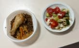
Гречневый суп на индейке
| Ингредиенты на 250 г готового блюда | Продукт | Кол-во | Вес |
|---|---|---|---|
| Вода | 1 стакан 200 мл. | 223.4 мл | |
| Индейка, молодая | 22.5 г | 22.3 г | |
| Картофель, сырой | 22.5 г | 22.3 г | |
| Гречиха, зерно | 5.5 г | 5.6 г | |
| Лук, репчатый | 17 г | 16.8 г | |
| Морковь | 6.5 г | 6.7 г |
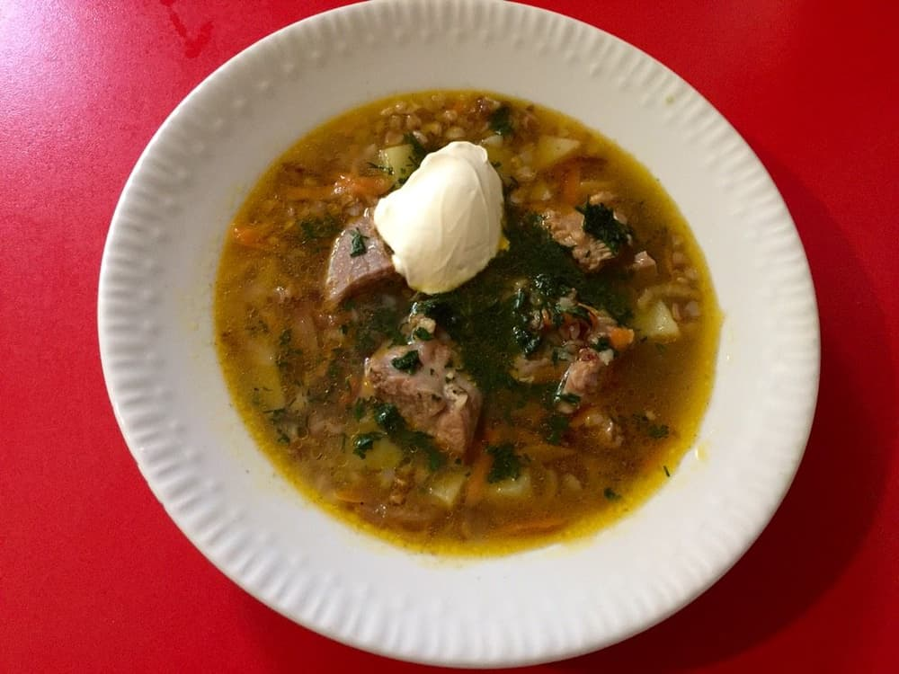
- 1. Варить индейку около 30 минут.
- 2. Нарезать овощи.
- 3. Достать мясо из готового бульона и выложить в него овощи и перебранную и промытую гречку, варить до готовности.
- 4. В конце выложить зелень, посолить по вкусу.
- 5. Порезать мясо на мелкие кубики и добавить в суп.
- 6. Поварить блюдо еще около 5 минут и снять с огня.
Картофель отварной
| Ингредиенты на 250 г готового блюда | Продукт | Кол-во | Вес |
|---|---|---|---|
| Картофель, сырой | 4.5 шт. | 434.2 г | |
| Масло сливочное 82,5% жирности, традиционное (в т.ч. Вологодское) | 22 г | 21.9 г |

- Картофель предварительно промыть, тщательно перебрать и очистить. Очищенный, промытый картофель залить горячей кипяченой водой (уровень воды должен быть на 1-1.5см выше уровня картофеля), добавить соль(при назначении врача) и варить при небольшом кипении 15-20 минут, закрыв посуду крышкой. Затем отвар слить, а посуду с готовым картофелем поставить на небольшой огонь на 1-2 минуты и, встряхивая, обсушить картофель.
Говядина с овощами
| Ингредиенты на 120 г готового блюда | Продукт | Кол-во | Вес |
|---|---|---|---|
| Говядина, отборная вырезка сырая | 63.3 г | 63.3 г | |
| Помидор (томат) | 0.5 шт. | 72.2 г | |
| Морковь | 19 г | 19 г | |
| Лук, репчатый | 0.5 шт. | 28.5 г | |
| Перец сладкий, желтый | 12.5 г | 12.7 г | |
| Соевый соус | 5.5 г | 5.7 г | |
| Сметана, 15% жирности | 3.5 г | 3.4 г | |
| Подсолнечное масло, высокоолеиновое (>70%) | 2 г | 2.2 мл |

- 1. Нарезать средними кусочками мясо, отправить на раскаленную сковороду, жарить около 20 мин, постоянно помешивая.
- 2. К мясу добавить лук и морковь.
- 3. Спустя мин 15 добавить болгарский перец и соевый соус.
- 4. Затем помидоры, солим, перчим, тушим около 10 мин.
- 5. В конце добавляем сметану, тушим еще 10 мин, добавляем воду в процессе, количество на ваше усмотрение.
Холодец из филе индейки
| Ингредиенты на 40 г готового блюда | Продукт | Кол-во | Вес |
|---|---|---|---|
| Индейка | 46.5 г | 46.5 г | |
| Чеснок, сырой | 3.5 г | 3.7 г | |
| Горчица, столовая | 3.5 г | 3.4 г | |
| Желатин (порошок) | 2 г | 2.2 г |

- Мясо индейки без жира отварить в 2 л. воды, переодически снимая пену (можно взять мясо на кости)
- Добавить лавровый лист, перей черный горошком (5-6шт) и соль по-вкусу. Варить 2 ч. на медленном огне
- Желатин залить стаканом воды и оставить набухать 40 минут, а потом растопить импульсами в микроволновке, периодически помешивая. Если желатин быстрорастворимый, то развести его горячим бульоном по инструкции.
- Мясо нарезать, добавить натертый чеснок (1 зубчик)
- В бульон добавить растворенный желатин, размешать и залить мясо бульоном, охладить и поставить в холодильник
- Подавать с горчицей, огурцами и зеленью
Вишневый кисель с корицей
| Ингредиенты на 300 г готового блюда | Продукт | Кол-во | Вес |
|---|---|---|---|
| Вишня | 10 шт. | 71.1 г | |
| Сахар, песок | 19.5 г | 19.4 г | |
| Вода | 1 стакан 250 мл. | 232.6 мл | |
| Картофельный крахмал | 13 г | 13 г | |
| Корица, молотая | 2.5 г | 2.3 г |

- 1. Подготовленную вишню без косточек залить кипящей водой, добавить специи — кожуру лимона или корицу, довести до кипения, варить на малом огне 10–15 минут.
- 2. Протереть ягоды сквозь сито или дуршлаг. В полученный отвар с мякотью вишни добавить сахар, довести до кипения и влить крахмал, разведенный в небольшом количестве холодной кипяченой воды, размешать, снова довести до кипения и тут же снять с огня. Кисель можно подать горячим или холодным.
Малиновое желе с клубникой
| Ингредиенты на 200 г готового блюда | Продукт | Кол-во | Вес |
|---|---|---|---|
| Клубника | 5.5 шт. | 96.6 г | |
| Малина | 14 шт. | 96.6 г | |
| Желатин (порошок) | 1 г | 1 г | |
| Вода | 12 г | 12.1 мл | |
| Сахар, песок | 3 чайные ложки | 24.2 г |

- 1. Малину измельчить в блендере, затем протереть через сито.
- 2. Желатин залить водой, довести до кипения, но не кипятить. Добавить в малиновое пюре желатин и сахар, перемешать.
- 3. Клубнику вымыть, обсушить и разложить по бокалам. Влить желе, поставить в холодильник до полного застывания.
Кукурузные кексы
| Ингредиенты на 50 г готового блюда | Продукт | Кол-во | Вес |
|---|---|---|---|
| Кукурузная мука | 21 г | 20.9 г | |
| Гречневая мука, цельнозерновая | 7 г | 7.2 г | |
| Соль, столовая йодированная | 0.1 г | 0.1 г | |
| Сода, пищевая | 0.5 г | 0.5 г | |
| Яблоко запеченное | 5.5 г | 5.6 г | |
| Вода | 16 г | 16.1 мл | |
| Кокосовое масло (жидкое) | 1.5 г | 1.6 мл |
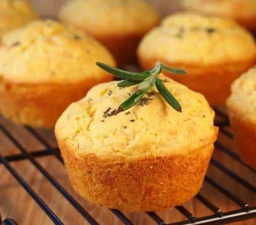
- Соединить в миске кукурузную муки, гречневую муки, щепотку соли, пол ч.л. соды.
- Добавить стевию по вкусу, четверть стакана яблочного пюре без сахара (можно взять готовое пюре без сахара или запечь яблоко и убрать кожуру), воды, любимого масла (кокоса, авокадо и др).
- Выложить в формочки, запекать при 200 гр. 30 мин. Или пока центр не будет твердым при нажатии.
Каша гречневая рассыпчатая (ФИЦ Питания)
| Ингредиенты на 200 г готового блюда | Продукт | Кол-во | Вес |
|---|---|---|---|
| Гречиха, зерно | 2 столовые ложки | 49.1 г | |
| Масло сливочное 72,5% жирности, крестьянское | 7 г | 6.9 г | |
| Соль поваренная пищевая | 0.5 г | 0.4 г | |
| Вода | 4 столовые ложки | 74.1 мл |

- Гречневую крупу перебрать, тщательно промыть. Подготовленную для варки крупу всыпать в подсоленную кипящую воду, всплывшие пустотелые зерна удалить. Кашу варить до загустения, периодически помешивая. В конце варки добавить масло, плотно закрыть посуду крышкой и оставить на плите с умеренным нагревом для упревания.
Котлеты из индейки, запеченые
| Ингредиенты на 120 г готового блюда | Продукт | Кол-во | Вес |
|---|---|---|---|
| Фарш из индейки | 92.8 г | 92.8 г | |
| Хлеб пшеничный | 18.5 г | 18.6 г | |
| Вода | 24.5 г | 24.7 мл | |
| Соль, столовая йодированная | 0.5 г | 0.6 г |

- В фарш из мяса индейки добавляют замоченный в воде хлеб, пропускают через мясорубку, (соль по желанию), хорошо вымешивают. Формуют котлеты и выпекают в духовом шкафу при 180-200 град. до готовности.
- #с4лет
Греческий салат
| Ингредиенты на 100 г готового блюда | Продукт | Кол-во | Вес |
|---|---|---|---|
| Помидор (томат) | 25 г | 25 г | |
| Огурец. грунтовый | 22.5 г | 22.5 г | |
| Перец сладкий, красный | 10 г | 10 г | |
| Перец сладкий, желтый | 10 г | 10 г | |
| Лук красный | 5 г | 5 г | |
| Сыр фета, м.д.ж. 48% в сух. в-ве | 12.5 г | 12.5 г | |
| Оливки (чёрные), консервированные | 1 шт. | 3.8 г | |
| Оливки (зеленые), консервированные | 1.5 шт. | 6.3 г | |
| Оливковое масло | 0.5 чайные ложки | 2.5 мл | |
| Хлеб из цельного зерна | 2.5 г | 2.5 г |
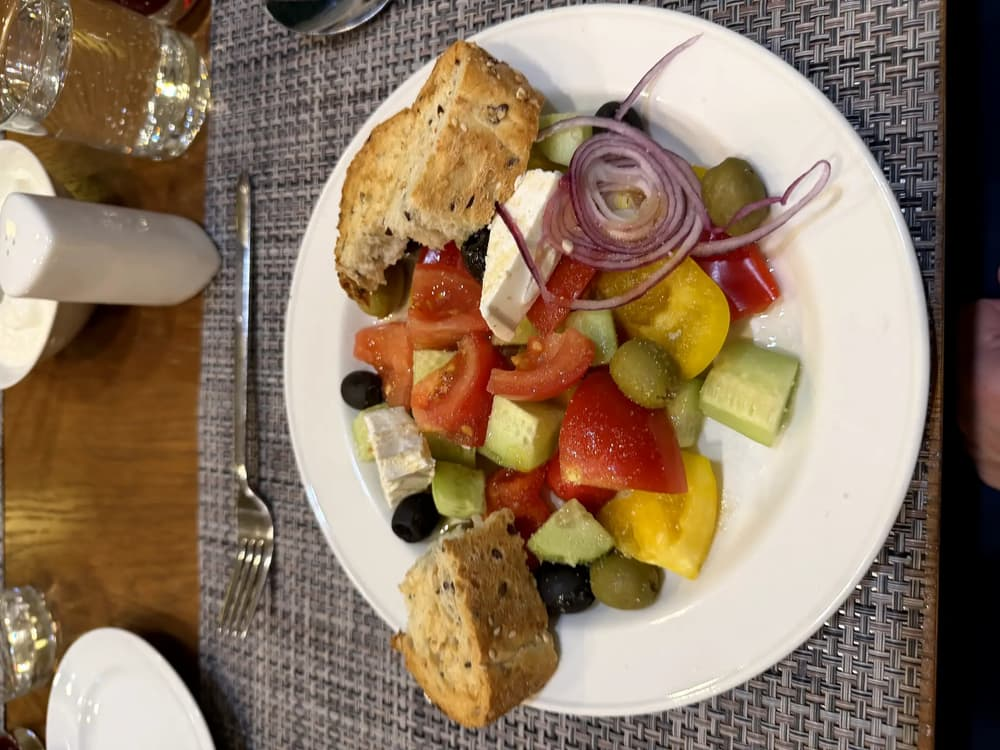
Сок вишневый без сахара терпкий
| Ингредиенты на 300 г готового блюда | Продукт | Кол-во | Вес |
|---|---|---|---|
| Сок из яблок | 1.5 стакана 200 мл. | 300 мл |

- Сок из вишнни
Омлет натуральный
| Ингредиенты на 120 г готового блюда | Продукт | Кол-во | Вес |
|---|---|---|---|
| Яйцо, куриное | 1.5 шт. | 88.3 г | |
| Коровье молоко, 3,2% жирности пастеризованное | 2.5 столовые ложки | 45.3 мл | |
| Масло сливочное | 8 г | 7.9 г |
- Яйцо взбить, добавить молоко. Взбитую массу влить на смазанную маслом форму и выпечь. Подать с маслом.
Чечевичный суп-пюре
| Ингредиенты на 300 г готового блюда | Продукт | Кол-во | Вес |
|---|---|---|---|
| Вода | 1 стакан 200 мл. | 168.5 мл | |
| Чечевица | 3 столовые ложки | 33.7 г | |
| Помидор (томат) | 1.5 шт. | 134.8 г | |
| Чеснок, сырой | 8 г | 8.1 г |

- Промыть чечевицу и добавить ее в подсоленную кипящую воду, варить 25 мин.
- Нарезать томаты, почистить и выдавить чеснок.
- Через 25 мин добавить томаты с чесноком и специями к чечевице. Варить еще 10 мин. Готовый суп пюрировать блендером.
Телятина тушеная
| Ингредиенты на 120 г готового блюда | Продукт | Кол-во | Вес |
|---|---|---|---|
| Телятина, 1 кат. | 196.7 г | 196.7 г |

- Телятину разделать на кусочки, тушить.
Булгур с овощами
| Ингредиенты на 200 г готового блюда | Продукт | Кол-во | Вес |
|---|---|---|---|
| Булгур, сухой | 4 столовые ложки | 74.9 г | |
| Перец сладкий, красный | 11 г | 11.2 г | |
| Морковь | 7.5 г | 7.5 г | |
| Подсолнечное масло, высокоолеиновое (>70%) | 1.5 чайные ложки | 7.5 мл | |
| Соль, столовая йодированная | 1 г | 0.8 г |

- Овощи режим кубиком 1/1 см, обжариваем в сковороде на масле до полуготовности . Булгур заливаем водой доводим кипения варим на среднем огне 10 мин, и оставляем на медленном еще 5 . Выключаем и оставляем минут на 5 под крышкой.
Салат «Здоровье»
| Ингредиенты на 70 г готового блюда | Продукт | Кол-во | Вес |
|---|---|---|---|
| Салат (латук) | 30.2 г | 30.2 г | |
| Яблоко | 14.5 г | 14.5 г | |
| Морковь | 9 г | 9.1 г | |
| Сметана, 15% жирности | 14.5 г | 14.5 г | |
| Огурец. грунтовый | 13.5 г | 13.3 г | |
| Сок из лимона | 0.5 г | 0.6 мл | |
| Соль, столовая йодированная | 0.5 г | 0.6 г | |
| Сахар, песок | 0.5 г | 0.6 г |
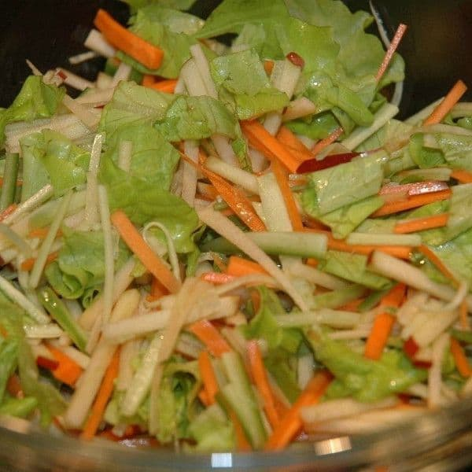
- 1. Нарезать тонкими ломтиками яблоко, морковь и огурец.
- 2. Ломтики нарезать на тонкие брусочки.
- 3. Салат помыть, высушить, порвать или порезать.
- 4. Для заправки смешать сметану, лимонный сок, соль и сахар.
- 5. Смешать овощи, зелень и заправку.
Салат Капрезе
| Ингредиенты на 100 г готового блюда | Продукт | Кол-во | Вес |
|---|---|---|---|
| Помидор (томат), грунтовый | 49.3 г | 49.3 г | |
| Сыр моцарелла, м.д.ж. 34% в сух. в-ве | 1 кусок | 42.3 г | |
| Соус песто, готовый, длительного хранения | 3.5 г | 3.5 г | |
| Базилик, свежий | 3.5 г | 3.5 г | |
| Оливковое масло | 2 г | 1.8 мл | |
| Руккола | 10.5 г | 10.6 г |
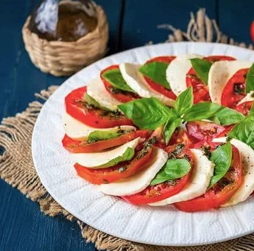
- 1. Напезать кружочками моцареллу, томаты и выложить в центр листья рукколы
- 2. Заправить маслом/соусом песто
- 3. Украсить свежими листиками базилика
- Приятного аппетита!
Кисель из клюквы
| Ингредиенты на 300 г готового блюда | Продукт | Кол-во | Вес |
|---|---|---|---|
| Вода | 1 стакан 250 мл. | 252.1 мл | |
| Картофельный крахмал | 2 чайные ложки | 20.2 г | |
| Сахар, песок | 1 столовая ложка | 25.2 г | |
| Клюква | 0.5 стакана 200 мл. | 32.8 г |

- Ягоды варят 20-30 мин при слабом кипении, протирают и соединяют с отваром, в котором они варились, добавляют сахар, доводят до кипения, вводят подготовленный крахмал и вновь доводят до кипения.
Пышный творожный кекс с изюмом
| Ингредиенты на 50 г готового блюда | Продукт | Кол-во | Вес |
|---|---|---|---|
| Пшеничная мука, белая высшего сорта | 11.5 г | 11.5 г | |
| Масло сливочное | 5.5 г | 5.7 г | |
| Сахар, песок | 11.5 г | 11.5 г | |
| Творог, 2% жирности | 2 чайные ложки | 10 г | |
| Изюм, без косточек | 4 г | 3.8 г | |
| Яйцо, куриное | 7 г | 7.2 г | |
| Разрыхлитель пищевой | 0.2 г | 0.2 г | |
| Соль, столовая йодированная | 0.5 г | 0.5 г | |
| Сахар, песок | 2.5 г | 2.3 г |
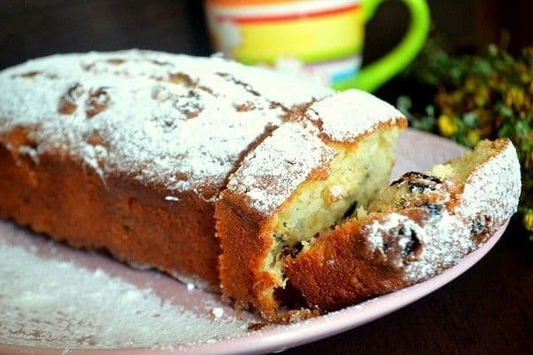
- 1. Изюм залить кипятком на несколько минут, откинуть на сито, дать просохнуть.
- 2. Творог протереть через сито, до полной однородности и гладкости
- 3. Сахарный песок и сливочное масло взбить как следует блендером.
- 4. Добавить творог и взбивать дальше до однородности.
- 5. Смешать яйца вилкой и влить туда же. Хорошо размешайте миксером.
- 6. Всыпать просеянную с разрыхлителем и солью муку.
- 7. Размешать тесто тщательно миксером, добавив изюм.
- 8. Выложить тесто в форму для кекса в виде «кирпичика»
- 9. Духовку разогреть до 170 градусов, выпекать 60 минут.
- 10. Проверить зубочисткой или деревянной палочкой — она должна быть сухой.
- 11. Вынуть кекс из духовки, дать ему остыть, вынуть из формы, посыпать сахарной пудрой.
Картофельное пюре (ФИЦ Питания)
| Ингредиенты на 200 г готового блюда | Продукт | Кол-во | Вес |
|---|---|---|---|
| Картофель, сырой | 3 шт. | 285.2 г | |
| Коровье молоко, 3,2% жирности пастеризованное | 2.5 столовые ложки | 45.2 мл | |
| Соль, столовая йодированная | 8.5 г | 8.7 г | |
| Подсолнечное масло, высокоолеиновое (>70%) | 0.5 г | 0.5 мл |

- Очищенный картофель промыть, сварить в подсоленной воде, отвар слить. Горячий картофель пропустить через протирочную машину (или блендер), соединить с горячим кипяченым молоком, маслом, хорошо перемешать, прогреть. Блюдо подавать горячим.
Лосось атлантический запеченный
| Ингредиенты на 120 г готового блюда | Продукт | Кол-во | Вес |
|---|---|---|---|
| Лосось, атлантический (семга) | 0.5 шт. | 150.8 г | |
| Лимон | 2.5 г | 2.5 г | |
| Укроп, свежий | 1.5 г | 1.3 г |

- Филе рыбы нарезают порционными кусками. Выкладывают на противень, сверху кладут ломтик лимона и веточку укропа. Специи по назначению врача.
- #с7лет
Овощи гриль
| Ингредиенты на 100 г готового блюда | Продукт | Кол-во | Вес |
|---|---|---|---|
| Баклажан | 33.3 г | 33.3 г | |
| Помидор (томат) | 0.5 шт. | 44.4 г | |
| Лук, репчатый | 22 г | 22.2 г | |
| Шампиньоны, сырые | 22 г | 22.2 г | |
| Соль, столовая йодированная | 1 г | 1.1 г | |
| Перец черный, молотый или горошек | 11 шт. | 1.1 г | |
| Уксус, столовый 9% | 11 г | 11.1 г | |
| Чеснок, сырой | 6.5 г | 6.7 г | |
| Йогурт, 1,5% жирности натуральный | 22 г | 22.2 г |

- 1. Баклажаны промыть, нарезать в длину полосками толщиной 1 см. Помидоры промыть и нарезать кружочками толщиной 1 см. Грибы промыть, отделить от ножек, со шляпок снять верхнюю кожицу. Лук очистить, нарезать кольцами толщиной 1 см.
- 2. Все овощи выложить на противень, предварительно застеленный бумагой для запекания и смазанный растительным маслом.
- 3. Баклажаны намазать уксусом. Затем все овощи посолить, поперчить и сбрызнуть сверху растительным маслом.
- 4. Поставить в духовку на 20 минут на гриль, температура 250 градусов.
- 5. Чеснок мелко порубить, смешать с йогуртом.
- 6. После этого вытащить и баклажаны намазать смесью из йогурта и чеснока и поставить в духовку еще на 5 минут.
мюсли батончик
| Ингредиенты на 50 г готового блюда | Продукт | Кол-во | Вес |
|---|---|---|---|
| Мюсли | 26 г | 26 г | |
| Яблоко | 18 г | 18.2 г | |
| Арахис, жареный | 8 г | 7.8 г |
- Мюсли батончик фруктово-орехово-зерновой
Кукурузная каша
| Ингредиенты на 300 г готового блюда | Продукт | Кол-во | Вес |
|---|---|---|---|
| Вода | 0.5 стакана 250 мл. | 135.1 мл | |
| Кукурузная крупа | 24.5 г | 24.3 г | |
| Коровье молоко, 2,5% жирности пастеризованное | 4.5 столовые ложки | 84.5 мл | |
| Масло сливочное | 7 г | 6.8 г | |
| Сахар, песок | 3.5 г | 3.4 г | |
| Соль, столовая йодированная | 0.5 г | 0.7 г |

- 1. В кипящую подсоленную воду всыпать помешивая крупу и варить на слабом огне 10–15 минут.
- 2. Влить кипящее молоко, всыпать сахар, положить сливочное масло, размешать и продолжать варить на слабом огне еще 15–20 минут.
Суп куриный с лапшой
| Ингредиенты на 300 г готового блюда | Продукт | Кол-во | Вес |
|---|---|---|---|
| Картофель, сырой | 0.5 шт. | 32.6 г | |
| Масло сливочное 72,5% жирности, крестьянское | 3.5 г | 3.3 г | |
| Бульон, куриный | 1 стакан 250 мл. | 228.3 г | |
| Морковь | 13 г | 13 г | |
| Макароны, сухие | 1 столовая ложка | 26.1 г | |
| Лук, репчатый | 6.5 г | 6.5 г | |
| Соль, столовая йодированная | 1.5 г | 1.6 г |

- Овощи предварительно перебрать, очистить, промыть. Подготовленные морковь, репчатый лук мелко нашинковать, припустить в небольшом количестве бульона с добавлением сливочного масла затем добавить бульон мелко шинкованный картофель, соль и варить до готовности. Вермишель отварить в большом количестве воды, откинуть на сито, соединить с куриным бульоном, довести до кипения. Можно посыпать мелко нашинкованной свежей зеленью.
- #с4лет
Холодец из филе индейки
| Ингредиенты на 50 г готового блюда | Продукт | Кол-во | Вес |
|---|---|---|---|
| Индейка | 58.1 г | 58.1 г | |
| Чеснок, сырой | 4.5 г | 4.7 г | |
| Горчица, столовая | 4.5 г | 4.3 г | |
| Желатин (порошок) | 0.5 чайные ложки | 2.7 г |
- Мясо индейки без жира отварить в 2 л. воды, переодически снимая пену (можно взять мясо на кости)
- Добавить лавровый лист, перей черный горошком (5-6шт) и соль по-вкусу. Варить 2 ч. на медленном огне
- Желатин залить стаканом воды и оставить набухать 40 минут, а потом растопить импульсами в микроволновке, периодически помешивая. Если желатин быстрорастворимый, то развести его горячим бульоном по инструкции.
- Мясо нарезать, добавить натертый чеснок (1 зубчик)
- В бульон добавить растворенный желатин, размешать и залить мясо бульоном, охладить и поставить в холодильник
- Подавать с горчицей, огурцами и зеленью
Фунчоза с овощами
| Ингредиенты на 200 г готового блюда | Продукт | Кол-во | Вес |
|---|---|---|---|
| Фунчоза (лапша из крахмала бобов мунг), сухая | 49.3 г | 49.3 г | |
| Лук порей | 15 г | 14.8 г | |
| Морковь | 15 г | 14.8 г | |
| Перец сладкий, красный | 15 г | 14.8 г | |
| Масло сливочное, топленое 99% жирности | 7.5 г | 7.4 г | |
| Кабачок | 15 г | 14.8 г | |
| Кунжут | 2.5 г | 2.5 г | |
| Соевый соус | 1 чайная ложка | 4.9 г |

- Отвариваем фунчозу согласно рецепту на упаковке. порядка 5 минут
- Одновременно в сотейнике разогреваем топленое масло
- туда загружаем нарезанные тонкой соломкой овощи: кабачок, морковь, перец
- и кольцами лук порей.
- немного обжариваем до требуемой вам степени готовности
- После обжарки добавляем фунчозу и перемешиваем.
- вместо соли использую немного соевого соуса.
- Очень вкусное и красивое блюдо!
Салат с моцареллой
| Ингредиенты на 90 г готового блюда | Продукт | Кол-во | Вес |
|---|---|---|---|
| Сыр моцарелла, м.д.ж. 34% в сух. в-ве | 1 кусок | 34.9 г | |
| Киноа, приготовленная | 14 г | 14 г | |
| Тыквенные семечки, сушеные | 3 г | 2.8 г | |
| Салат (латук) | 8.5 г | 8.4 г | |
| Перец сладкий, красный | 19.5 г | 19.6 г | |
| Помидор (томат), парниковый | 14 г | 14 г | |
| Подсолнечное масло, высокоолеиновое (>70%) | 3 г | 2.8 мл | |
| Уксус, бальзамический | 3 г | 2.8 г |
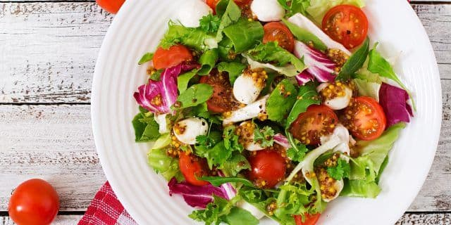
- Порезать, смешать все ингредиенты.
Тушеная говядина
| Ингредиенты на 120 г готового блюда | Продукт | Кол-во | Вес |
|---|---|---|---|
| Говядина, отборная вырезка сырая | 0.5 куска | 141.6 г | |
| Морковь | 0.5 шт. | 26.6 г | |
| Лук, репчатый | 0.5 шт. | 35.4 г | |
| Соль, столовая йодированная | 0.5 г | 0.4 г |
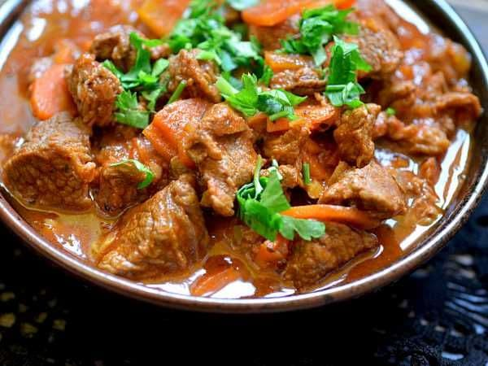
- Говядину порезать произвольными кусочками.⠀
- Взять кастрюлю с толстым дном или глубокую сковороду.⠀
- Положить туда кусочки говядины, залить стаканом кипятка.⠀
- Положить душистый перец, лавровый лист, довести до кипения.⠀
- Тушить на небольшом огне под крышкой примерно 30-40 минут или до почти полного выкипания жидкости.⠀⠀
- Лук почистить, порезать крупными полукольцами.⠀⠀
- Морковь почистить, порезать небольшими брусочками.⠀
- Когда в кастрюле почти вся жидкость выпарится, добавить лук.⠀⠀
- Добавить морковь.⠀⠀
- Хорошо перемешать, добавить 1 стакан кипятка, увеличить огонь, довести до кипения и затем тушить говядину на маленьком огне под крышкой в течение примерно 1,30 часа ( в сумме 2,5 ч).⠀⠀
- Мясо получается очень мягкое и тает во рту, соус имеет загустевший вид, и лук почти полностью растворяется в соусе.⠀
Компот из яблок (ФИЦ Питания)
| Ингредиенты на 300 г готового блюда | Продукт | Кол-во | Вес |
|---|---|---|---|
| Яблоко | 1 шт. | 105.7 г | |
| Вода | 1 стакан 250 мл. | 256.5 мл |
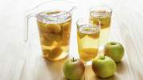
- Свежие яблоки промыть, удалить семенные коробочки, нарезать дольками, заложить в кипящую воду и варить при слабом кипении 6-8 минут, затем охладить. Или подготовленные сушеные плоды залить горячей водой, нагреть до кипения и варить до готовности 20-30 минут
Сэндвич со слабосоленой рыбой
| Ингредиенты на 150 г готового блюда | Продукт | Кол-во | Вес |
|---|---|---|---|
| Горбуша соленая | 20 г | 20.1 г | |
| Помидор (томат) | 0.5 шт. | 67 г | |
| Огурец. грунтовый | 0.5 шт. | 33.5 г | |
| Айсберг (салат кочанный) | 13.5 г | 13.4 г | |
| Хлеб из цельного зерна | 1.5 куска | 30.1 г |
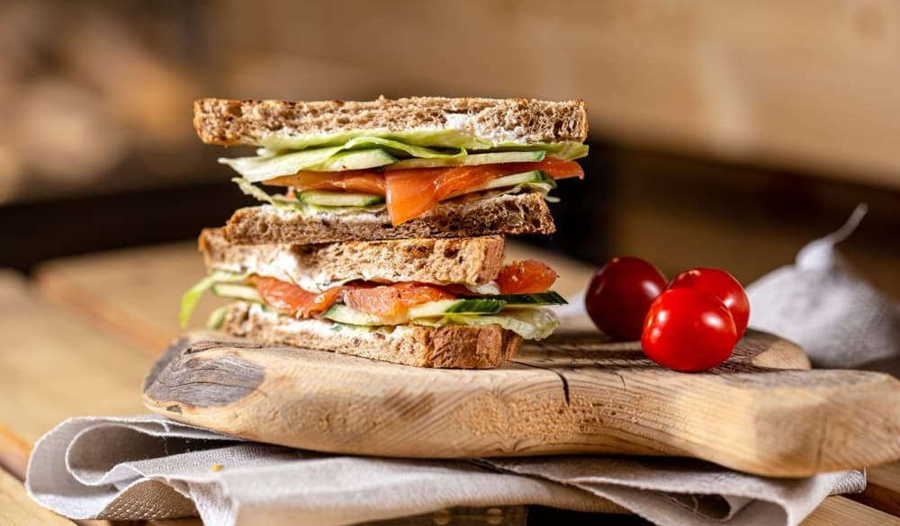
- Положить на хлеб лист салата, помидор, огурец, рыбу (можно любую слабосоленую)
Салат "Летний"
| Ингредиенты на 150 г готового блюда | Продукт | Кол-во | Вес |
|---|---|---|---|
| Помидор (томат) | 0.5 шт. | 70.1 г | |
| Яблоко | 0.5 шт. | 35.1 г | |
| Перец сладкий, красный | 0.5 шт. | 52.6 г | |
| Оливковое масло | 16 г | 15.8 мл | |
| Соль, столовая йодированная | 0.5 г | 0.4 г | |
| Сахар, коричневый | 0.5 г | 0.4 г | |
| Сок из лимона | 3.5 г | 3.5 мл |

- Помидоры положите в дуршлаг, облейте кипятком, а затем сразу же - холодной водой. Снимите кожицу. Нарежьте очищенные помидоры тонкими ломтиками.
- Очищенное яблоко разрежьте пополам и удалите сердцевину. Яблоко тоже нарежьте дольками. Перец нарежьте мелкой соломкой. Все перемешайте.
- Посолите, всыпьте сахар, добавьте лимонный сок и полейте растительным маслом.
Рис отварной рассыпчатый (ФИЦ Питания)
| Ингредиенты на 250 г готового блюда | Продукт | Кол-во | Вес |
|---|---|---|---|
| Рис белый, длиннозерный сухой | 2.5 столовые ложки | 59.5 г | |
| Вода | 0.5 стакана 250 мл. | 124.5 мл | |
| Соль, столовая йодированная | 1 г | 1.1 г | |
| Масло сливочное 72,5% жирности, крестьянское | 5.5 г | 5.5 г |

- Рис перебрать, промыть в теплой и горячей воде, засыпать в кипящую, подсоленную воду, удалить всплывшие пустотелые зерна и варить до готовности. Откинуть рис на сито, добавить сливочное масло, тщательно перемешать, прогреть. Подавать в теплом виде на гарнир.
Мясные тефтели в томатном соусе
| Ингредиенты на 120 г готового блюда | Продукт | Кол-во | Вес |
|---|---|---|---|
| Лук, репчатый | 24.5 г | 24.5 г | |
| Паста, томатная | 18.5 г | 18.4 г | |
| Морковь | 12 г | 12.2 г | |
| Рис белый, короткозерный сухой | 18.5 г | 18.4 г | |
| Говядина, фарш 5% жира сырая | 49 г | 49 г |
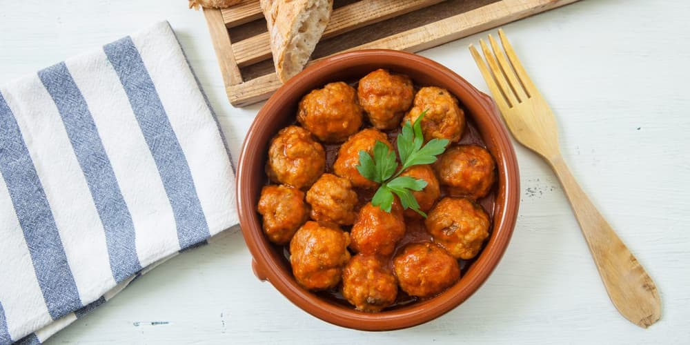
- Морковь натереть на терке, лук нарезать кубиками.Фарш посолить, поперчить, добавить половину лука, тертую морковь, рис и замесить фарш.Мокрыми руками скатать шарики и обжарить.Между тефтелями засыпать оставшийся лук и обжарить пару минут.Водой развести томатную пасту, залить тефтели. Добавить специи, сахар и посолить.(специи по назначению врача)Тушить на слабом огне 35–40 минут, затем выключить и дать постоять 15 минут.
- #с4лет
Кисель из яблок
| Ингредиенты на 300 г готового блюда | Продукт | Кол-во | Вес |
|---|---|---|---|
| Вода | 1 стакан 200 мл. | 218.2 мл | |
| Кукурузный крахмал | 13.5 г | 13.6 г | |
| Сахар, песок | 5 чайных ложек | 40.9 г | |
| Яблоко, сушеное | 1 стакан 200 мл. | 54.6 г |
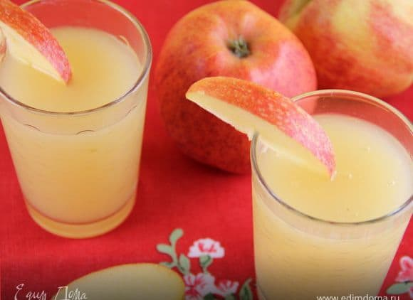
- Подготовленные яблоки залить водой, добавить сахар и довести до кипения. Затем добавить крахмал и загущить.
Каша гречневая молочная без масла
| Ингредиенты на 300 г готового блюда | Продукт | Кол-во | Вес |
|---|---|---|---|
| Вода | 3.5 столовые ложки | 64.1 мл | |
| Гречиха, зерно | 1.5 столовые ложки | 42.7 г | |
| Коровье молоко, 2,5% жирности пастеризованное | 0.5 стакана 250 мл. | 138.8 мл | |
| Сахар, песок | 5.5 г | 5.3 г |

- В кипящую воду всыпают перебранную и промытую крупу, перемешивают и варят до полуготовности. Затем вливают горячее молоко и варят до готовности при слабом кипении под закрытой крышкой.
- #с7лет
Запеканка творожная
| Ингредиенты на 200 г готового блюда | Продукт | Кол-во | Вес |
|---|---|---|---|
| Творог, 5% жирности | 155.6 г | 155.6 г | |
| Яйцо, куриное | 0.5 шт. | 33.3 г | |
| Сахар, песок | 11 г | 11.1 г |
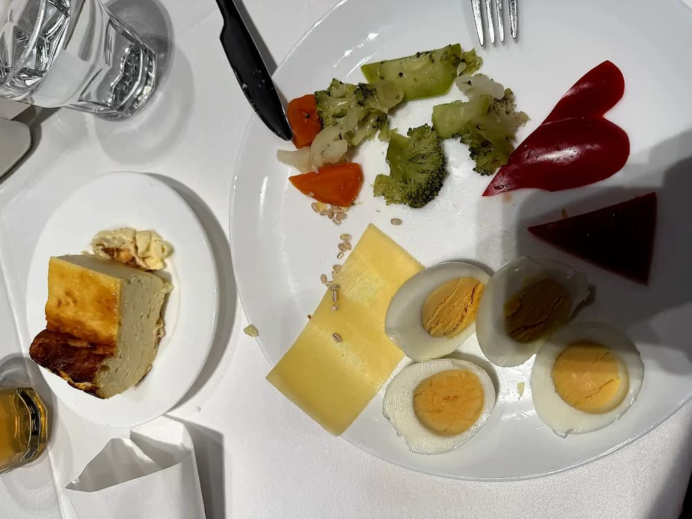
Салат с нутом и гранатом
| Ингредиенты на 100 г готового блюда | Продукт | Кол-во | Вес |
|---|---|---|---|
| Нут (турецкий горох) | 33.8 г | 33.8 г | |
| Свекла | 0.5 шт. | 25.3 г | |
| Сок из лимона | 4 г | 4.2 мл | |
| Оливковое масло | 0.5 чайные ложки | 2.5 мл | |
| Гранат | 8.5 г | 8.5 г | |
| Соль, столовая йодированная | 0.1 г | 0.1 г | |
| Петрушка, свежая | 0.5 чайные ложки | 0.8 г |
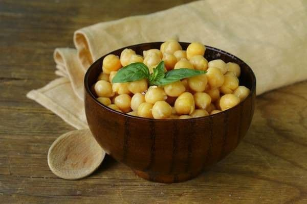
- Хорошо промойте и замочите на ночь нут. Залейте нут горячей водой и варите до готовности. Слейте воду и дайте нуту остыть.
- Запеките свеклу в разогретой до 180 С духовке до готовности, очистите от кожуры и натрите на крупной терке. Перемешайте свеклу и нут, посолите, добавьте гранатовые зерна, мелко порубленную зелень и заправьте оливковым маслом и лимонным соком.
Щи из свежей капусты на мясном бульоне со сметаной (ФИЦ Питания)
| Ингредиенты на 300 г готового блюда | Продукт | Кол-во | Вес |
|---|---|---|---|
| Капуста, белокочанная | 74.9 г | 74.9 г | |
| Картофель, сырой | 0.5 шт. | 49.9 г | |
| Морковь | 12.5 г | 12.5 г | |
| Лук, репчатый | 6 г | 6 г | |
| Подсолнечное масло, высокоолеиновое (>70%) | 0.5 чайные ложки | 2.5 мл | |
| Сметана, 20% жирности | 5 г | 5 г | |
| Петрушка, свежая | 3.5 г | 3.5 г | |
| Петрушка (корень) | 3.5 г | 3.5 г | |
| Помидор (томат) | 12 г | 12 г | |
| Бульон, говяжий | 1 стакан 250 мл. | 224.6 г | |
| Соль, столовая йодированная | 0.5 г | 0.3 г |

- Подготовленные овощи: морковь, репчатый лук, корень петрушки мелко нарезать, припустить в небольшом количестве воды с добавлением масла, в конце добавить томат или свежие помидоры. Белокочанную капусту зачистить, промыть, нарезать тонкими шашками, залить горячим мясным бульоном, довести до кипения, добавить мелко нарезанный картофель, припущенные коренья, соль и варить до готовности. При подаче суп заправить сметаной и посыпать мелко нарезанной зеленью петрушки.
Кускус (кус-кус), приготовленный
| Ингредиенты на 200 г готового блюда | Продукт | Кол-во | Вес |
|---|---|---|---|
| Кускус (кус-кус), сухой | 6.5 чайные ложки | 45.8 г | |
| Вода | 5 столовых ложек | 91.5 мл | |
| Соль, столовая йодированная | 0.5 г | 0.5 г |

- Варить крупу не обязательно, можно предварительно запарить в кипячёной воде на 15 минут. Кус-кус выходит рассыпчатым, хорошо добавлять в салаты. Для каш его нужно выдержать немного дольше, хватит и 20 минут при соблюдении пропорций.
- Важно правильно взять количество ингредиентов для получения рассыпчатой консистенции. Необходимо подготовить воду и крупу в пропорции 1,5:1. Воду желательно регулировать, чтобы блюдо получилось нужной консистенции. Получить влажный кус-кус можно, если взять воды с крупой в соотношении 2:1. Когда жидкость полностью впитается, её считают готовой к употреблению.
Булочки бриошь
| Ингредиенты на 70 г готового блюда | Продукт | Кол-во | Вес |
|---|---|---|---|
| Пшеничная мука, белая высшего сорта | 1 столовая ложка | 29.7 г | |
| Сахар, песок | 6 г | 5.9 г | |
| Соль, столовая йодированная | 0.5 г | 0.5 г | |
| Дрожжи, прессованные | 0.1 г | 0.1 г | |
| Масло сливочное | 12 г | 11.9 г | |
| Яйцо, куриное | 19.5 г | 19.5 г | |
| Коровье молоко, 2,5% жирности пастеризованное | 6 г | 5.9 мл | |
| Яичный желток, куриный | 1 г | 1.1 г |

- 1. Дрожжи и сахар развести в теплом молоке.
- 2. Муку просеять с солью.
- 3. Затем дрожжи с сахаром добавить в чуть взбитые яйца. Продолжая взбивать, всыпать муку. Вымешивать тесто около 5 минут, пока тесто не станет упругим. Тесто должно легко отходить от стенок миски и не липнуть к рукам.
- 4. Добавить в смесь размягченное сливочное масло и все тщательно перемешать.
- 5. Накрыть миску с тестом полиэтиленовой пленкой и дать постоять около 1 часа для увеличения в объеме вдвое.
- 6. Затем тесто еще раз вымесить, накрыть пленкой и поставить в холодильник на 4 часа. Лучше оставить в холодильнике на всю ночь.
- 7. После истечения 4-х часов (или спустя ночь) нужно достать тесто из холодильника и дать тесту согреться около 30–40 минут. Затем тесто разделить на булочки и дать подойти 30 минут при комнатной температуре.
- 8. Развести желток с водой и смазать подошедшие булочки, сверху посыпать сахаром.
- 9. Выпекать при 180 градусах до золотистого цвета.
Салат «Хориятики»
| Ингредиенты на 150 г готового блюда | Продукт | Кол-во | Вес |
|---|---|---|---|
| Орегано, сушеный | 1.5 г | 1.3 г | |
| Перец сладкий, желтый | 31.8 г | 31.8 г | |
| Лук, репчатый | 17 г | 17 г | |
| Помидор (томат) | 0.5 шт. | 42.4 г | |
| Огурец. грунтовый | 0.5 шт. | 31.8 г | |
| Сыр фета, м.д.ж. 48% в сух. в-ве | 19 г | 19.1 г | |
| Оливки (чёрные), консервированные | 21 г | 21.2 г | |
| Оливковое масло | 2 г | 2.1 мл | |
| Уксус, винный 3% | 2 г | 2.1 г |

- 1. Репчатый лук очистите, вымойте и нарежьте кубиками.
- 2. Помидоры и огурец вымойте и нарежьте дольками.
- 3. Сладкий перец вымойте, разрежьте пополам и удалите семена. Нарежьте перец небольшими полосками.
- 4. Сыр фета откиньте на дуршлаг и дайте рассолу стечь. Нарежьте сыр кубиками.
- 5. Выложите овощи, маслины, сыр и зелень в салатник. Осторожно перемешайте так, чтобы не помять составляющие салата.
- 6. Винный уксус и оливковое масло взбить вилкой. Заправьте салат соусом.
- 7. Подавайте салат охлажденным, украсив орегано.
Кисло-сладкая курица
| Ингредиенты на 180 г готового блюда | Продукт | Кол-во | Вес |
|---|---|---|---|
| Куриная грудка (филе, курица) | 103.5 г | 103.5 г | |
| Перец сладкий, красный | 0.5 шт. | 38.8 г | |
| Ананас, консервированный в легком сахарном сиропе | 25.9 г | 25.9 г | |
| Соевый соус | 0.5 столовые ложки | 7.2 г | |
| Уксус, бальзамический | 4.5 г | 4.4 г | |
| Сахар, песок | 13 г | 12.9 г | |
| Кетчуп | 13 г | 12.9 г | |
| Картофельный крахмал | 15.5 г | 15.5 г | |
| Подсолнечное масло | 4 г | 3.9 мл |

- Нарежьте куриное филе кубиками, посолите и обваляйте в крахмале.
- Обжарьте курицу в масле до золотистого цвета.
- В отдельной сковороде обжарьте нарезанный болгарский перец и ананасы.
- Добавьте в сковороду соевый соус, уксус, сахар и кетчуп. Перемешайте и прогрейте 2-3 минуты.
- Выложите курицу в соус и тушите еще 5 минут.
Рис отварной
| Ингредиенты на 250 г готового блюда | Продукт | Кол-во | Вес |
|---|---|---|---|
| Вода | 5.5 столовые ложки | 98.3 мл | |
| Рис белый, длиннозерный сухой | 2.5 столовые ложки | 67.4 г | |
| Масло сливочное 72,5% жирности, крестьянское | 11 г | 11.2 г |

- Подготовленную рисовую крупу кладут в подсоленную кипящую воду и варят при слабом кипении. Когда зерна набухнут и станут мягкими, рис откидывают и промывают холодной водой. После стекания воды рис кладут в посуду, заправляют маслом, перемешивают и прогревают
- #с4лет
мюсли батончик
| Ингредиенты на 100 г готового блюда | Продукт | Кол-во | Вес |
|---|---|---|---|
| Мюсли | 52.1 г | 52.1 г | |
| Яблоко | 0.5 шт. | 36.5 г | |
| Арахис, жареный | 15.5 г | 15.6 г |
- Мюсли батончик фруктово-орехово-зерновой
Вареники с творогом (сладкие)
| Ингредиенты на 200 г готового блюда | Продукт | Кол-во | Вес |
|---|---|---|---|
| Пшеничная мука, белая высшего сорта | 3 столовые ложки | 95.8 г | |
| Яйцо, куриное | 0.5 шт. | 31.1 г | |
| Творог, 2% жирности | 4.5 столовые ложки | 74.9 г | |
| Сахар, песок | 7 г | 7.2 г | |
| Соль, столовая йодированная | 0.5 г | 0.6 г | |
| Масло сливочное | 6 г | 6 г |
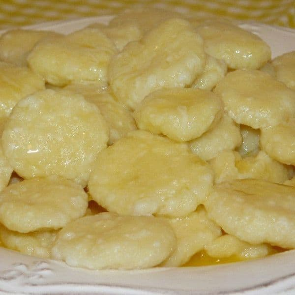
- 1. Творог выкладываем в посуду, добавим к нему сахар и хорошенько с помощью ложки перетрем его. В процессе перетирания можете немного посолить творог по своему вкусу.
- 2. Теперь к творогу вбиваем одно яйцо и так же, как и сахар вымешиваем до однородного состояния.
- 3. Муку, которая у нас есть, поделим пополам, половину добавим сейчас в смесь творога с яйцом, а вторую половину оставим на процесс вылепливания ленивых вареников, в качестве подсыпки.
- 4. На досточку подсыпаем немного муки, накладываем творожную массу с горкой.
- 5. С помощью рук слегка раскатываем творожное тесто в колбаску.
- 6. Колбаску с теста, которая у нас получилась, режим на небольшие кусочки с помощью острого ножа.
- 7. Теперь наливаем в кастрюлю около трех литров воды, ставим на огонь и доводим до кипения. После того, как вода закипела, понемногу отвариваем наши ленивые вареники. Бросаем вареники в кипящую воду, доводим их до кипения и варим на среднем огне примерно около трех минут.
- 8. Готовые вареники выловим с кастрюли с помощью шумовки, выкладываем их на тарелку еще горячими и хорошенько смазываем их сливочным маслом, по желанию можете к вареничкам добавить немного сметаны.
Рис басмати
| Ингредиенты на 200 г готового блюда | Продукт | Кол-во | Вес |
|---|---|---|---|
| Рис белый, длиннозерный сухой | 1.5 столовые ложки | 42.8 г | |
| Вода | 6.5 столовые ложки | 116.3 мл | |
| Соль, столовая йодированная | 1 г | 0.9 г |

- 1. Рис промыть от 3-х до 7-ми раз. Качественно промытая крупа — залог положительного результата.
- 2. В кастрюле с толстым дном довести до кипения подсоленную воду, всыпать рис.
- 3. Дальше варить 4 минуты на максимальном огне, 4 минуты на среднем и 4 минуты на слабом.
- 4. Снять кастрюлю с плиты и с закрытой крышкой отставить на 12 минут.
- 5. Снять крышку на 5 минут. Тщательно перемешать.
Морковный салат
| Ингредиенты на 100 г готового блюда | Продукт | Кол-во | Вес |
|---|---|---|---|
| Сок из лимона | 4.5 г | 4.4 мл | |
| Апельсин | 0.5 шт. | 32.6 г | |
| Виноград | 16.5 г | 16.3 г | |
| Морковь | 0.5 шт. | 54.4 г | |
| Кунжутное масло | 6.5 г | 6.5 мл |

- Приготовление:
- Почистить морковь и натереть ее на терке. Очистить апельсин и разделить на дольки. Выжать сок из второго апельсина. Смешать апельсиновый и лимонный соки, масло. Полученной смесью полить тертую морковь. Сверху положить дольки апельсина и виноград.
Треска, рыба, тушеная
| Ингредиенты на 180 г готового блюда | Продукт | Кол-во | Вес |
|---|---|---|---|
| Вода | 2 столовые ложки | 40.4 мл | |
| Помидор (томат), грунтовый | 6 г | 5.8 г | |
| Лук, репчатый | 21 г | 21.2 г | |
| Треска | 0.5 шт. | 117.4 г | |
| Подсолнечное масло, высокоолеиновое (>70%) | 9.5 г | 9.6 мл | |
| Морковь | 0.5 шт. | 52 г |

- Филе нарезают на порционные куски, укладывают в посуду в два слоя, чередуя со слоями нарезанных соломкой моркови и лука репчатого, заливают водой, добавляют томатное пюре, сметану, масло растительное, посуду закрывают крышкой и тушат 30 мин до готовности.
- #с4лет
Борщ с капустой и картофелем на курином бульоне со сметаной
| Ингредиенты на 300 г готового блюда | Продукт | Кол-во | Вес |
|---|---|---|---|
| Капуста, белокочанная | 23.5 г | 23.5 г | |
| Подсолнечное масло, высокоолеиновое (>70%) | 6 г | 5.9 мл | |
| Сметана, 20% жирности | 6 г | 5.9 г | |
| Картофель, сырой | 23.5 г | 23.5 г | |
| Морковь | 14.5 г | 14.7 г | |
| Паста, томатная | 9 г | 8.8 г | |
| Бульон, куриный | 1 стакан 250 мл. | 235.3 г | |
| Сахар, песок | 3 г | 2.9 г | |
| Лук, репчатый | 12 г | 11.8 г | |
| Свекла | 0.5 шт. | 47.1 г |

- Овощи предварительно перебрать, очистить, промыть. Мелко нарезанные: репчатый лук и морковь пассировать с растительным маслом, в конце добавить томатное пюре. В кипящий куриный бульон заложить нашинкованную свежую капусту, довести до кипения, затем добавить нарезанный брусочками картофель, варить 10-15 минут затем добавить пассированные овощи, тушеную или вареную свеклу и варить до готовности. За 5-10 минут до окончания варки добавить соль, сахар. При подаче заправить сметаной.
- #до3лет
Салат с моцареллой
| Ингредиенты на 120 г готового блюда | Продукт | Кол-во | Вес |
|---|---|---|---|
| Сыр моцарелла, м.д.ж. 34% в сух. в-ве | 12 г | 12 г | |
| Оливки (зеленые), консервированные | 9 г | 8.8 г | |
| Помидор (томат), грунтовый | 27.7 г | 27.7 г | |
| Огурец. грунтовый | 0.5 шт. | 29.2 г | |
| Тунец натуральный. Консервы | 38 г | 38 г | |
| Шпинат, сырой | 7.5 г | 7.3 г | |
| Подсолнечное масло, высокоолеиновое (>70%) | 4 г | 4.1 мл |

- Нарезать сыр, помидор, огурец.
- Смешать все ингредиенты в тарелке.
Булочки с корицей на дрожжах
| Ингредиенты на 50 г готового блюда | Продукт | Кол-во | Вес |
|---|---|---|---|
| Масло сливочное | 0.5 чайные ложки | 4.9 г | |
| Яйцо, куриное | 2.5 г | 2.6 г | |
| Сахар, песок | 3.5 г | 3.4 г | |
| Дрожжи, прессованные | 0.5 г | 0.3 г | |
| Коровье молоко, 2,5% жирности пастеризованное | 2.5 чайные ложки | 12.3 мл | |
| Пшеничная мука, белая высшего сорта | 22 г | 22.1 г | |
| Соль, столовая йодированная | 0.5 г | 0.5 г | |
| Сахар, коричневый | 3.5 г | 3.7 г | |
| Корица, молотая | 2 г | 2 г |

- 1. Дрожжи смешать с 2–3 столовыми ложками теплого молока, 1 чайной ложкой сахара и 1 столовой ложкой муки и оставить на 10 минут.
- 2. Масло растереть с сахаром, добавить яйцо, взбить хорошо до однородной массы венчиком.
- 3. Добавить муку по частям, молоко, получившуюся молочно-дрожжевую смесь и все перемешать.
- 4. Стол посыпать рукой и тщательно вымесить тесто.
- 5. Оставить тесто на час-два, пока оно не увеличится в два раза.
- 6. Когда тесто готово, посыпаем стол мукой и раскатываем его в прямоугольник.
- 7. Посыпаем тесто сахарно-коричной смесью.
- 8. Тесто заворачиваем в рулетик и разрезаем на булочки.
- 9. Противень выстелить пекарской бумагой, смазать сливочным малом.
- 10. Выложить булочки. Смазать их взбитым яйцом и выпекать около 30–40 минут при 180 градусах.
Тропический смузи
| Ингредиенты на 300 г готового блюда | Продукт | Кол-во | Вес |
|---|---|---|---|
| Манго | 0.5 шт. | 197.4 г | |
| Апельсиновый сок | 4.5 столовые ложки | 79 мл | |
| Кокосовое молоко, сырое | 4.5 столовые ложки | 79 мл | |
| Лаймовый сок | 8 г | 7.9 мл |
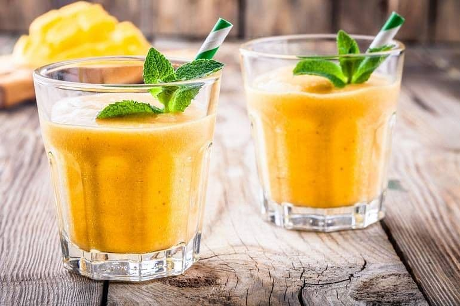
- Рецепт:
- 1. Смешайте все ингредиенты в блендере.
- 2. Наслаждайтесь!
Салат из белокочанной и морской капусты (ФИЦ Питания)
| Ингредиенты на 150 г готового блюда | Продукт | Кол-во | Вес |
|---|---|---|---|
| Капуста, белокочанная | 126.9 г | 126.9 г | |
| Петрушка, свежая | 3.5 чайные ложки | 6.9 г | |
| Лук зеленый (перо) | 10.5 г | 10.3 г | |
| Морская капуста (ламинария) | 27.4 г | 27.4 г | |
| Сахар, песок | 0.5 г | 0.4 г | |
| Сок из лимона | 1.5 г | 1.7 мл | |
| Подсолнечное масло, высокоолеиновое (>70%) | 6 г | 6 мл |

- Белокочанную капусту мелко нашинковать, добавить соль, раствор лимонной кислоты (0,2г на 10мл воды) и нагреть при непрерывном помешивании, пока капуста не осядет. Капусту охладить, смешать с вареной морской капустой, нарезанной соломкой, или морской капустой консервированной, добавить сахар и растительное масло, все перемешать. При подаче блюдо украсить мелко нарезанным зеленым луком и свежей петрушкой
Паста с креветками
| Ингредиенты на 200 г готового блюда | Продукт | Кол-во | Вес |
|---|---|---|---|
| Паста (макароны, спагетти), приготовленная без соли | 35.3 г | 35.3 г | |
| Креветка, сырая | 7 шт. | 106 г | |
| Шпинат, сырой | 2.5 шт. | 70.7 г | |
| Чеснок, сырой | 7 г | 7.1 г | |
| Сливки, 10% жирности пастеризованные | 2.5 столовые ложки | 35.3 г |
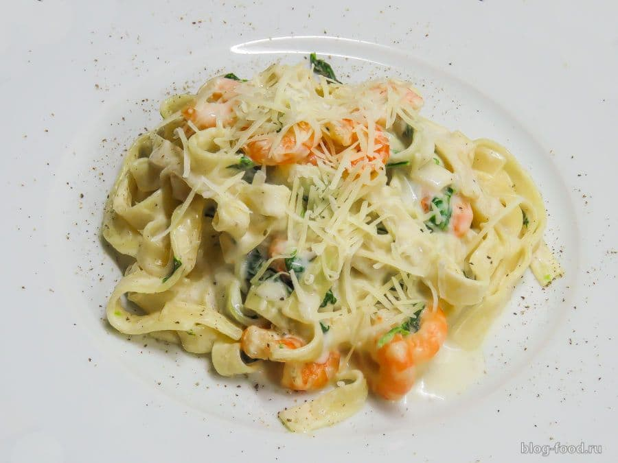
- Креветки обжарить с чесноком , давать шпинат, сливки, потушить до готовности, добавить отваренную пасту, перемешать .
Рисовая молочная каша
| Ингредиенты на 300 г готового блюда | Продукт | Кол-во | Вес |
|---|---|---|---|
| Сахар, коричневый | 2 г | 2 г | |
| Рис белый, длиннозерный сухой | 2 столовые ложки | 46.9 г | |
| Коровье молоко, 1,5% жирности пастеризованное | 1 стакан 200 мл. | 203.8 мл | |
| Соль, столовая йодированная | 0.5 г | 0.4 г | |
| Масло сливочное | 4 г | 4.1 г |

- 1. 1Рис промыть и засыпать в чашу мультиварки.
- 2. Добавить молоко, соль, сахар, масло, перемешать.
- 3. Включить режим «Молочная каша» на 1 час 15 минут.
- 4. После сигнала об окончании работы программы открыть мультиварку и перемешать кашу.
- 5. Закрыть крышку и оставить в режиме «Подогрев» ещё на 15 минут.
- 6. Разложить по тарелкам.
Оладьи из кабачков
| Ингредиенты на 150 г готового блюда | Продукт | Кол-во | Вес |
|---|---|---|---|
| Соль, столовая йодированная | 0.5 г | 0.7 г | |
| Кабачок | 0.5 шт. | 179.4 г | |
| Яйцо, куриное | 1 шт. | 43.1 г | |
| Сыр сливочный 16,8% жирности, м.д.ж. 50% в сух. в-ве | 14.5 г | 14.4 г |
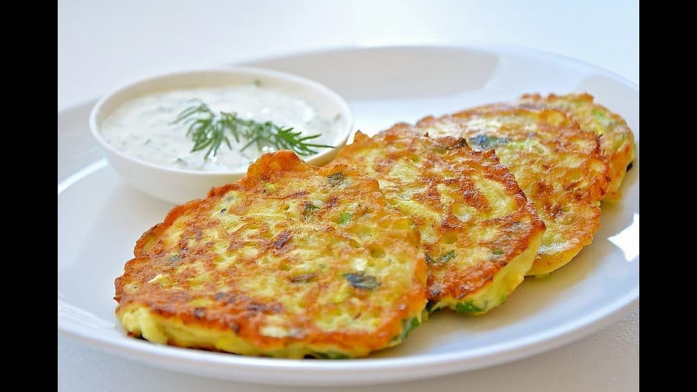
- Кабачок промыть, отрезать ножку и очистить от кожуры.
- Натереть на терке, положить в отдельную емкость и посолить. Оствить на 10 минут, чтоб выделилась жидкость. Хорошо отжать и просушить бумажными полотенцами.
- Сыр натереть на терке, добавить к нему яйцо, соль и перемешать. Соединить с отжатым кабачком. Сформировать оладушки (можно воспользоваться силиконовой формой для кексов), выпекать в разогретой до 180 гр духовке примерно 20 минут.
Суп харчо с мясом
| Ингредиенты на 300 г готового блюда | Продукт | Кол-во | Вес |
|---|---|---|---|
| Баранина, 1 кат. | 50.4 г | 50.4 г | |
| Масло сливочное 72,5% жирности, крестьянское | 2.5 г | 2.5 г | |
| Паста, томатная | 0.5 чайные ложки | 5 г | |
| Вода | 1 стакан 250 мл. | 252.1 мл | |
| Петрушка (корень) | 2.5 г | 2.5 г | |
| Рис белый, короткозерный сухой | 15 г | 15.1 г | |
| Лук, репчатый | 7.5 г | 7.6 г |

- Баранину нарезают на кусочки массой 25-30 г и варят. Лук репчатый мелко рубят и пассеруют с добавлением томатного пюре.
- В кипящий бульон кладут предварительно замоченную крупу рисовую, пассерованный лук и томатное пюре и варят до готовности. За 5 мин до окончания варки суп заправляют специями.
- #с7лет
Свежий салат из моркови и белокочанной капусты
| Ингредиенты на 100 г готового блюда | Продукт | Кол-во | Вес |
|---|---|---|---|
| Морковь | 1 шт. | 63.4 г | |
| Капуста, белокочанная | 35.2 г | 35.2 г | |
| Соль поваренная пищевая | 1.5 г | 1.4 г |
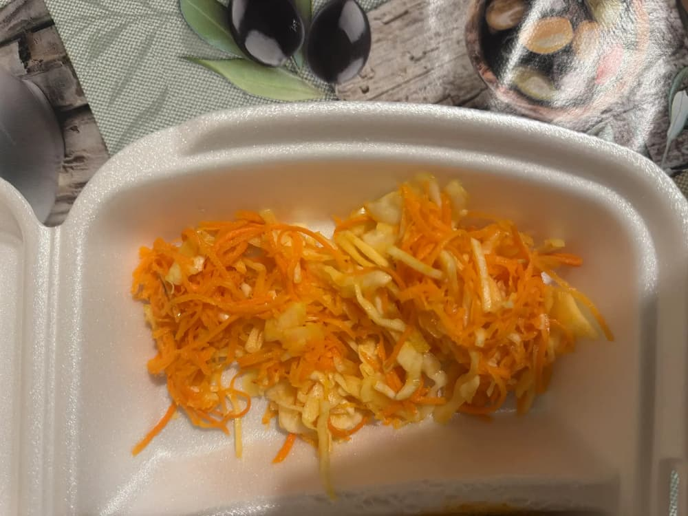
- 1. Морковь очистите и натрите на крупной или средней тёрке.
- 2. Белокочанную капусту тонко нашинкуйте.
- 3. Переложите овощи в миску, добавьте соль.
- 4. Аккуратно перемешайте и слегка помните руками, чтобы овощи стали мягче и пустили сок.
- 5. Подавайте салат сразу после приготовления.
Черничный компот
| Ингредиенты на 300 г готового блюда | Продукт | Кол-во | Вес |
|---|---|---|---|
| Вода | 3 столовые ложки | 58.1 мл | |
| Сахар, песок | 6 чайных ложек | 46.5 г | |
| Черника | 5 столовых ложек | 174.4 г | |
| Лимонная цедра, сырая | 2 чайные ложки | 14 г | |
| Сок из лимона | 16.5 г | 16.7 мл |
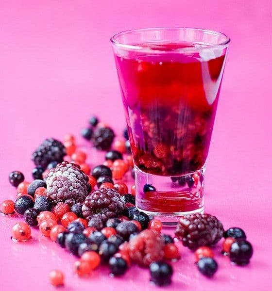
- 1. В кастрюле смешайте воду, сахар и цедру. Доведите до кипения, помешивая, пока сахар не растворится, и варите 5 минут, не закрывая. Извлеките цедру.
- 2. Добавьте чернику и варите, помешивая, примерно 3-5 минут, пока черника не начнет лопаться. Снимите с огня и добавьте лимонный сок. Подавайте теплым или комнатной температуры.
Банановый кекс
| Ингредиенты на 50 г готового блюда | Продукт | Кол-во | Вес |
|---|---|---|---|
| Масло сливочное | 6 г | 5.8 г | |
| Сахар, песок | 7.5 г | 7.3 г | |
| Яйцо, куриное | 6 г | 6.1 г | |
| Ванилин | 0.1 г | 0.1 г | |
| Банан | 7 г | 7 г | |
| Пшеничная мука, белая высшего сорта | 16.5 г | 16.3 г | |
| Уксус, столовый 9% | 1 г | 0.8 г | |
| Соль, столовая йодированная | 0.2 г | 0.2 г | |
| Сода, пищевая | 0.2 г | 0.2 г | |
| Грецкий орех | 11.5 г | 11.6 г |

- 1. Растопить масло и взбить вместе с сахаром, добавить яйца и ваниль. Размешать.
- 2. Размять бананы до состояния пюре, добавить к массе вместе с мукой, измельченными орехами, солью и содой, гашенной уксусом. Тщательно перемешать.
- 3. Смазать маслом форму для запекания, выложить банановую массу и выпекать в духовке около часа.
Морковный смузи с яблоком и апельсином
| Ингредиенты на 300 г готового блюда | Продукт | Кол-во | Вес |
|---|---|---|---|
| Морковь | 0.5 шт. | 53.9 г | |
| Яблоко | 0.5 шт. | 80.8 г | |
| Лайм | 19 г | 18.9 г | |
| Имбирь, корень сырой | 1 г | 1.1 г | |
| Вода | 2 столовые ложки | 40.4 мл | |
| Льняное масло | 1.5 г | 1.4 мл | |
| Апельсиновый сок | 0.5 стакана 250 мл. | 134.7 мл |
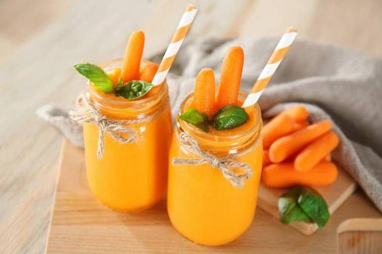
- Приготовление:
- 1. Очистите морковь и нарежьте крупными кусочками. Очистите и так же нарежьте яблоки и имбирь. Разрежьте лайм пополам и выжмите сок.
- 2. Нарезанную морковь, яблоко, имбирь, лаймовый и апельсиновый сок, воду и льняное масло взбить вместе с помощью мощного блендера. Должна получиться однородная консистенция.
Салат с креветками, рукколой и помидорами черри
| Ингредиенты на 100 г готового блюда | Продукт | Кол-во | Вес |
|---|---|---|---|
| Помидор (томат) | 0.5 шт. | 40.8 г | |
| Креветка, сырая | 7.5 шт. | 108.8 г | |
| Соль, столовая йодированная | 0.5 г | 0.7 г | |
| Перец черный, молотый или горошек | 7 шт. | 0.7 г | |
| Оливковое масло | 0.5 г | 0.7 мл | |
| Уксус, бальзамический | 0.5 г | 0.7 г | |
| Руккола | 13.5 г | 13.6 г |

- 1. Разморозить креветки, очистить.
- 2. Разогреть сковороду с оливковым маслом.
- 3. Жарить креветки на большом огне 2–3 минуты (креветки не должны тушиться, они должны подрумяниться).
- 4. Черри разрезать пополам. Рукколу порвать руками и добавить к помидорам.
- 5. Добавить по вкусу соль, перец и бальзамический уксус.
Пельмени домашние
| Ингредиенты на 350 г готового блюда | Продукт | Кол-во | Вес |
|---|---|---|---|
| Соль, столовая йодированная | 1.5 г | 1.5 г | |
| Яйцо, куриное | 10.5 г | 10.3 г | |
| Лук, репчатый | 15 г | 14.9 г | |
| Чеснок, сырой | 5 г | 4.8 г | |
| Перец черный, молотый или горошек | 10 шт. | 1 г | |
| Пшеничная мука, белая высшего сорта | 4 столовые ложки | 123.9 г | |
| Вода | 3.5 столовые ложки | 62 мл | |
| Говядина, 1 кат. | 0.5 куска | 123.9 г | |
| Свинина, вырезка | 0.5 куска | 123.9 г |
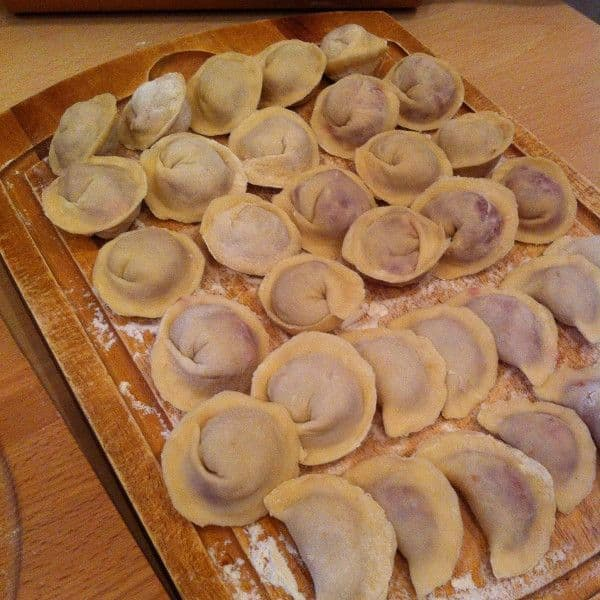
- 1. Просейте муку горкой. Сверху сделайте кратер и влейте в него яйцо. Вмешивать муку от краев к центру, постепенно добавлять воду. Если вы боитесь делать это прямо на столе — возьмите большой широкий салатник, хотя все должно получиться с первого раза. Вымешивайте тесто, пока оно не станет эластичным. Накройте тесто мокрым полотенцем и оставьте на полчаса, оно станет эластичнее и будет легче раскатываться.
- 2. В это время делаем фарш для начинки: говядину и свинину режем кусочками, добавляем чеснок и нарезанный лук и рубим в блендере в фарш. Солим и перчим.
- 3. Большую доску присыпаем мукой и берем 1/4 теста, тонко раскатываем. Чтобы удалить излишки муки, смачиваем руки холодной водой и проводим ими по тесту. Вырезаем кружки желаемого размера (специальной формой или просто тонким стаканом), кладем в центр чайную ложку начинки и защипываем края. Можно оставить такую форму, а можно соединить и защипать два края, чтоб получилось «ушко».
- 4. Отвариваем пельмени в большом количестве подсоленной воды или в бульоне 8–10 минут.
Быстрое овсяное печенье
| Ингредиенты на 50 г готового блюда | Продукт | Кол-во | Вес |
|---|---|---|---|
| Яйцо, куриное | 11 г | 10.8 г | |
| Овсяная крупа (овес) | 7 г | 7.1 г | |
| Сахар, песок | 1 г | 1 г | |
| Пшеничная мука, белая высшего сорта | 6.5 г | 6.6 г | |
| Масло сливочное | 2 г | 2.1 г |

- 1. Размягченное сливочное масло растираем с сахаром добела, постепенно добавляя яйца. Когда сахар полностью растворится, добавляем смешанные с мукой овсяные хлопья и все перемешиваем.
- 2. Готовое тесто набираем ложкой и с помощью другой ложки выкладываем на смазанный маслом противень. Выпекаем 10 минут при температуре 180–200 градусов.
Кукурузная каша с курагой
| Ингредиенты на 300 г готового блюда | Продукт | Кол-во | Вес |
|---|---|---|---|
| Кукурузная крупа | 2 столовые ложки | 40.2 г | |
| Курага (абрикосы сушеные) | 2.5 шт. | 32.2 г | |
| Подсолнечник, семечки, поджареные без соли | 8 г | 8 г | |
| Вода | 6.5 столовые ложки | 120.6 мл | |
| Соль, столовая йодированная | 0.5 г | 0.4 г |

- Подготовленную крупу засыпать в кипящую воду, варить периодически помешивая до загустения в течение 15-20 мин., затем добавить горячее порезанную курагу и варить до готовности. Добавить соль. При подаче кашу посыпать семенами подсолнечника.
Каша гречневая (без соли и масла)
| Ингредиенты на 200 г готового блюда | Продукт | Кол-во | Вес |
|---|---|---|---|
| Гречиха, зерно | 2 столовые ложки | 50.9 г | |
| Вода | 4.5 столовые ложки | 76.7 мл |

- Гречневую крупу перебрать, тщательно промыть.
- Подготовленную для варки крупу всыпать в кипящую воду, всплывшие пустотелые зерна удалить. Кашу варить до загустения, периодически помешивая. В конце варки плотно закрыть посуду крышкой и оставить на плите с умеренным нагревом для упревания.
Азу из говядины
| Ингредиенты на 120 г готового блюда | Продукт | Кол-во | Вес |
|---|---|---|---|
| Подсолнечное масло, высокоолеиновое (>70%) | 1.5 г | 1.5 мл | |
| Говядина, 1 кат. | 0.5 куска | 94.9 г | |
| Огурцы, маринованные с укропом | 1 шт. | 30.4 г | |
| Лук, репчатый | 11.5 г | 11.4 г | |
| Сметана, 15% жирности | 4 чайные ложки | 38 г | |
| Соль, столовая йодированная | 1 г | 0.8 г | |
| Перец черный, молотый или горошек | 7.5 шт. | 0.8 г |

- 1. Порезать мясо на мелкие кусочки, можно кубиками. Нарезать головку репчатого лука как обычно — кольцами или полукольцами.
- 2. Обжарить мясо с луком. Немного посолить и поперчить мясо и перемешать с луком еще раз. Мелко нарезать кубиками соленые огурцы.
- 3. Добавить огурцы к мясу с луком и тушить их немного, чтобы огурцы дали сок. Затем добавить 200 грамм сметаны (лучше нежирной, а если жирной, то меньше), любимые специи к мясу и тушить еще 20 минут.
Суп гороховый с картофелем на мясном бульоне (ФИЦ Питания)
| Ингредиенты на 300 г готового блюда | Продукт | Кол-во | Вес |
|---|---|---|---|
| Картофель, сырой | 0.5 шт. | 58.6 г | |
| Горох, лущеный крупа | 25.3 г | 25.3 г | |
| Петрушка, свежая | 4.5 г | 4.4 г | |
| Морковь | 15.5 г | 15.6 г | |
| Лук, репчатый | 7.5 г | 7.5 г | |
| Подсолнечное масло, высокоолеиновое (>70%) | 3 г | 3.1 мл | |
| Соль поваренная пищевая | 0.5 г | 0.6 г | |
| Бульон, говяжий | 1 стакан 250 мл. | 224.5 г |

- Горох перебрать, промыть, заложить в холодную воду на 3-4 часа, варить в этом же бульоне до размягчения, затем добавить нарезанный кубиками картофель, пассированные в небольшом количестве воды с добавлением масла растительного морковь, лук репчатый и варить до готовности, затем добавить горячий мясной бульон, соль и довести до кипения. При подаче посыпать мелко нарезанной зеленью.
Салат со свеклой, нутом и фетой
| Ингредиенты на 70 г готового блюда | Продукт | Кол-во | Вес |
|---|---|---|---|
| Кускус (кус-кус), сухой | 4.5 г | 4.3 г | |
| Свекла | 10.5 г | 10.7 г | |
| Нут (турецкий горох) | 17 г | 17.1 г | |
| Сыр фета, м.д.ж. 48% в сух. в-ве | 8.5 г | 8.6 г | |
| Мята перечная, свежая | 1.5 г | 1.3 г | |
| Оливковое масло | 1.5 г | 1.3 мл | |
| Лаймовый сок | 0.5 г | 0.6 мл | |
| Огурец. грунтовый | 4.5 г | 4.3 г |
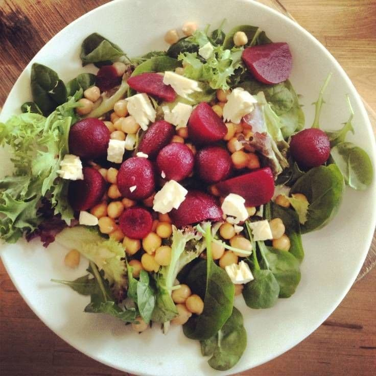
- Рецепт:
- Свеклу предварительно отварить. Нут следует использовать консервированный.
- Поместите кускус в кастрюлю с кипячёной водой (125 мл). Дайте воде впитаться в крупу, после чего перемешайте вилку. Смешайте вместе свеклу, нут, сыр фета, мяту(можно зелень, которую вы любите), лайм и оливковое масло. Добавьте огурец, всыпьте всё в миску с кускусом.
Салат Капрезе
| Ингредиенты на 70 г готового блюда | Продукт | Кол-во | Вес |
|---|---|---|---|
| Помидор (томат), грунтовый | 34.5 г | 34.5 г | |
| Сыр моцарелла, м.д.ж. 34% в сух. в-ве | 0.5 куска | 29.6 г | |
| Соус песто, готовый, длительного хранения | 2.5 г | 2.5 г | |
| Базилик, свежий | 2.5 г | 2.5 г | |
| Оливковое масло | 1 г | 1.2 мл | |
| Руккола | 7.5 г | 7.4 г |
- 1. Напезать кружочками моцареллу, томаты и выложить в центр листья рукколы
- 2. Заправить маслом/соусом песто
- 3. Украсить свежими листиками базилика
- Приятного аппетита!
Яблочно-морковный кекс
| Ингредиенты на 50 г готового блюда | Продукт | Кол-во | Вес |
|---|---|---|---|
| Яблоко | 20 г | 20.1 г | |
| Морковь | 10 г | 10 г | |
| Коровье молоко, 1,5% жирности пастеризованное | 12 г | 12.1 мл | |
| Овсяная мука (овес) | 6 г | 6 г | |
| Яйцо, куриное | 10.5 г | 10.4 г | |
| Разрыхлитель пищевой | 0.5 г | 0.5 г | |
| Подсластитель эритрит, FitParad | 3 г | 3 г |

- 1) измельчить в блендере все ингредиенты до однородности
- 2) перелить в форму для выпечки
- 3) ставим в микроволновку примерно на 5 минут до готовности
Смузи с киви и бананом
| Ингредиенты на 200 г готового блюда | Продукт | Кол-во | Вес |
|---|---|---|---|
| Руккола | 16 г | 15.9 г | |
| Киви, свежее | 0.5 шт. | 31.8 г | |
| Апельсин | 1 шт. | 79.4 г | |
| Банан | 0.5 шт. | 52.9 г | |
| Вода | 3 столовые ложки | 52.9 мл |

- Приготовление:
- Взбить в блендере до однородной массы.
Салат с кино и креветками
| Ингредиенты на 100 г готового блюда | Продукт | Кол-во | Вес |
|---|---|---|---|
| Киноа, приготовленная | 7.5 г | 7.4 г | |
| Руккола | 9 г | 8.9 г | |
| Помидор (томат), черри | 2 шт. | 29.7 г | |
| Авокадо | 12 г | 11.9 г | |
| Оливковое масло | 4.5 г | 4.5 мл | |
| Сок из лимона | 6 г | 5.9 мл | |
| Креветка, приготовленная на пару | 2.5 шт. | 29.7 г | |
| Лук красный | 12 г | 11.9 г |

- 1. Креветки размораживаем и маринуем. Для этого соединяем 2 чл оливкового масла и любимые приправы для морепродуктов. Оставляем на 15-20 минут. Далее креветки необходимо припустить на сковороде 5-7 минут.
- 2. Кино необходимо отварить в подсоленной воде. Для этого залейте киноа 100 мл воды и готовьте на среднем огне пока зернышки не впитают всю жидкость, около 15-20 минут. При необходимости добавьте воду.
- 3. Начинаем собирать салат. Авокадо нарежем мелким кубиком, добавим листья салата и помидорки бери. Тудаже отправляем уже6 остывший кино и креветки.
- 4. Заправляем салат: соединяем 2 чл оливкового масла и сок лимона, перемешиваем и добавляемк салату.
Пельмени классические
| Ингредиенты на 250 г готового блюда | Продукт | Кол-во | Вес |
|---|---|---|---|
| Вода | 2 столовые ложки | 35.5 мл | |
| Соль, столовая йодированная | 1 г | 1.1 г | |
| Свинина, мясная | 0.5 куска | 88.8 г | |
| Говядина, 1 кат. | 0.5 куска | 88.8 г | |
| Лук, репчатый | 10.5 г | 10.7 г | |
| Перец черный, молотый или горошек | 7 шт. | 0.7 г | |
| Лавровый лист | 0.5 шт. | 0.1 г | |
| Пшеничная мука, белая высшего сорта | 3 столовые ложки | 88.8 г | |
| Яйцо, куриное | 18.5 г | 18.5 г |
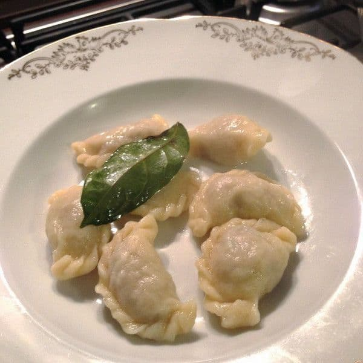
- 1. Начинка: прокрутить в мясорубке мясо с луком, фарш посолить, поперчить, вымесить до однородной массы.
- 2. Тесто: просеять муку, сделать в горке муки ямку, посолить, разбить яйца, добавить воду и вымесить плотное тесто до состояния эластичности, когда оно перестанет прилипать к рукам.
- 3. От готового теста взять часть, раскатать скалкой толщиной 1–2 мм или как можно тоньше, выдавить кружкой из пласта кружочки диаметром 4–5 см, положить внутрь чайную ложку готового фарша и склеить обе половинки между собой. Затем склеенный край завернуть косичкой, чтобы выглядели более красиво.
- 4. Получившиеся пельмени забросить в кипящую подсоленную воду, добавить лавровый лист и перец горошком для аромата и варить до готовности, пока они не всплывут на поверхность (5–7 минут).
Компот из крыжовника и черной смородины
| Ингредиенты на 200 г готового блюда | Продукт | Кол-во | Вес |
|---|---|---|---|
| Вода | 0.5 стакана 250 мл. | 137.3 мл | |
| Сахар, песок | 23.5 г | 23.5 г | |
| Крыжовник | 29.4 г | 29.4 г | |
| Смородина, черная | 29.4 г | 29.4 г |
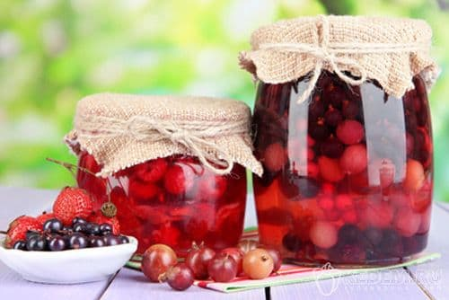
- Ягоды перебирают, удаляют плодоножки и моют. В готовый горячий сироп кладут подготовленные крыжовник и черную смородину, доводят до кипения и охлаждают.
- Для сиропа: в горячей воде растворяют сахар, доводят до кипения, проваривают 10-12 мин и процеживают.